A2 · Fable 5.2 · attempt eJyxgUs
Batch fb2 · job fb2_A_EXP22004263_21_Mar_2023_claude-fable-5-2 · trial A_EXP22004263_21_Mar_2023__eJyxgUs. Long tool outputs are cut at 6,000 characters.
0.36
48.7
$16.01
703
129
cd /task; ls -la inputs inputs/raw outputs; cat inputs/plate_layout.csv; cat inputs/gating_strategy.md; ls /root/.claude/projects/-task/memory/ 2>/dev/null; head -c 3000 inputs/start.flow
inputs: total 32 dr-xr-xr-x 3 root root 4096 Nov 5 08:11 . drwxr-xr-x 4 root root 4096 Nov 5 08:15 .. -r--r--r-- 1 root root 1665 Nov 5 08:11 gating_strategy.md -r--r--r-- 1 root root 2998 Nov 5 08:11 plate_layout.csv dr-xr-xr-x 2 root root 4096 Nov 5 08:11 raw -r--r--r-- 1 root root 9479 Nov 5 08:11 start.flow inputs/raw: total 71148 dr-xr-xr-x 2 root root 4096 Nov 5 08:11 . dr-xr-xr-x 3 root root 4096 Nov 5 08:11 .. -r--r--r-- 1 root root 3271636 Nov 5 08:11 Caspase_primaryneurons_caspase_Group_A1.fcs -r--r--r-- 1 root root 2345896 Nov 5 08:11 Caspase_primaryneurons_caspase_Group_A10.fcs -r--r--r-- 1 root root 2466856 Nov 5 08:11 Caspase_primaryneurons_caspase_Group_A11.fcs -r--r--r-- 1 root root 2924488 Nov 5 08:11 Caspase_primaryneurons_caspase_Group_A2.fcs -r--r--r-- 1 root root 3461788 Nov 5 08:11 Caspase_primaryneurons_caspase_Group_A3.fcs -r--r--r-- 1 root root 2663308 Nov 5 08:11 Caspase_primaryneurons_caspase_Group_A5.fcs -r--r--r-- 1 root root 2347300 Nov 5 08:11 Caspase_primaryneurons_caspase_Group_A7.fcs -r--r--r-- 1 root root 2175976 Nov 5 08:11 Caspase_primaryneurons_caspase_Group_A8.fcs -r--r--r-- 1 root root 2898208 Nov 5 08:11 Caspase_primaryneurons_caspase_Group_A9.fcs -r--r--r-- 1 root root 2107360 Nov 5 08:11 Caspase_primaryneurons_caspase_Group_B1.fcs -r--r--r-- 1 root root 1877680 Nov 5 08:11 Caspase_primaryneurons_caspase_Group_B2.fcs -r--r--r-- 1 root root 512020 Nov 5 08:11 Caspase_primaryneurons_caspase_Group_B3.fcs -r--r--r-- 1 root root 2124352 Nov 5 08:11 Caspase_primaryneurons_caspase_Group_B4.fcs -r--r--r-- 1 root root 1223344 Nov 5 08:11 Caspase_primaryneurons_caspase_Group_B5.fcs -r--r--r-- 1 root root 296344 Nov 5 08:11 Caspase_primaryneurons_caspase_Group_B6.fcs -r--r--r-- 1 root root 3457612 Nov 5 08:11 Caspase_primaryneurons_caspase_Group_C1.fcs -r--r--r-- 1 root root 3204892 Nov 5 08:11 Caspase_primaryneurons_caspase_Group_C10.fcs -r--r--r-- 1 root root 2299636 Nov 5 08:11 Caspase_primaryneurons_caspase_Group_C11.fcs -r--r--r-- 1 root root 2894176 Nov 5 08:11 Caspase_primaryneurons_caspase_Group_C2.fcs -r--r--r-- 1 root root 2465920 Nov 5 08:11 Caspase_primaryneurons_caspase_Group_C3.fcs -r--r--r-- 1 root root 3199456 Nov 5 08:11 Caspase_primaryneurons_caspase_Group_C5.fcs -r--r--r-- 1 root root 4294072 Nov 5 08:11 Caspase_primaryneurons_caspase_Group_C7.fcs -r--r--r-- 1 root root 1889812 Nov 5 08:11 Caspase_primaryneurons_caspase_Group_C8.fcs -r--r--r-- 1 root root 3330352 Nov 5 08:11 Caspase_primaryneurons_caspase_Group_C9.fcs -r--r--r-- 1 root root 3529864 Nov 5 08:11 Caspase_primaryneurons_caspase_Group_D1.fcs -r--r--r-- 1 root root 2669932 Nov 5 08:11 Caspase_primaryneurons_caspase_Group_D2.fcs -r--r--r-- 1 root root 2792224 Nov 5 08:11 Caspase_primaryneurons_caspase_Group_D3.fcs -r--r--r-- 1 root root 1691668 Nov 5 08:11 Caspase_primaryneurons_caspase_Group_D4.fcs -r--r--r-- 1 root root 671032 Nov 5 08:11 Caspase_primaryneurons_caspase_Group_D5.fcs -r--r--r-- 1 root root 1691308 Nov 5 08:11 Caspase_primaryneurons_caspase_Group_D6.fcs outputs: total 8 drwxrwsrwx 2 agent task 4096 Nov 5 08:15 . drwxr-xr-x 4 root root 4096 Nov 5 08:15 .. file,well,genotype,treatment,stain,replicate,is_control,control_type Caspase_primaryneurons_caspase_Group_A1.fcs,A1,WT,NT,unstained,1,yes,unstained Caspase_primaryneurons_caspase_Group_A2.fcs,A2,WT,NT,zombie_nir_only,1,yes,single_stain_zombie_nir Caspase_primaryneurons_caspase_Group_A3.fcs,A3,WT,NT,caspase_only,1,yes,single_stain_caspase Caspase_primaryneurons_caspase_Group_A5.fcs,A5,WT,DMSO,caspase_and_zombie_nir,1,yes,vehicle Caspase_primaryneurons_caspase_Group_A7.fcs,A7,WT,NT,caspase_and_zombie_nir,1,yes,untreated Caspase_primaryneurons_caspase_Group_A8.fcs,A8,WT,camptothecin_1uM,caspase_and_zombie_nir,1,no,none Caspase_primaryneurons_caspase_Group_A9.fcs,A9,WT,camptothecin_1uM,caspase_and_zombie_nir,2,no,none Caspase_primaryneurons_caspase_Group_A10.fcs,A10,WT,camptothecin_5uM,caspase_and_zombie_nir,1,no,none Caspase_primaryneurons_caspase_Group_A11.fcs,A11,WT,camptothecin_5uM,caspase_and_zombie_nir,2,no,none Caspase_primaryneurons_caspase_Group_B1.fcs,B1,WT,camptothecin_10uM,caspase_and_zombie_nir,1,no,none Caspase_primaryneurons_caspase_Group_B2.fcs,B2,WT,camptothecin_10uM,caspase_and_zombie_nir,2,no,none Caspase_primaryneurons_caspase_Group_B3.fcs,B3,WT,camptothecin_20uM,caspase_and_zombie_nir,1,no,none Caspase_primaryneurons_caspase_Group_B4.fcs,B4,WT,camptothecin_20uM,caspase_and_zombie_nir,2,no,none Caspase_primaryneurons_caspase_Group_B5.fcs,B5,WT,unrecorded,unrecorded,0,no,none Caspase_primaryneurons_caspase_Group_B6.fcs,B6,WT,unrecorded,unrecorded,0,no,none Caspase_primaryneurons_caspase_Group_C1.fcs,C1,PGRN_KO,NT,unstained,1,yes,unstained Caspase_primaryneurons_caspase_Group_C2.fcs,C2,PGRN_KO,NT,zombie_nir_only,1,yes,single_stain_zombie_nir Caspase_primaryneurons_caspase_Group_C3.fcs,C3,PGRN_KO,NT,caspase_only,1,yes,single_stain_caspase Caspase_primaryneurons_caspase_Group_C5.fcs,C5,PGRN_KO,DMSO,caspase_and_zombie_nir,1,yes,vehicle Caspase_primaryneurons_caspase_Group_C7.fcs,C7,PGRN_KO,NT,caspase_and_zombie_nir,1,yes,untreated Caspase_primaryneurons_caspase_Group_C8.fcs,C8,PGRN_KO,camptothecin_1uM,caspase_and_zombie_nir,1,no,none Caspase_primaryneurons_caspase_Group_C9.fcs,C9,PGRN_KO,camptothecin_1uM,caspase_and_zombie_nir,2,no,none Caspase_primaryneurons_caspase_Group_C10.fcs,C10,PGRN_KO,camptothecin_5uM,caspase_and_zombie_nir,1,no,none Caspase_primaryneurons_caspase_Group_C11.fcs,C11,PGRN_KO,camptothecin_5uM,caspase_and_zombie_nir,2,no,none Caspase_primaryneurons_caspase_Group_D1.fcs,D1,PGRN_KO,camptothecin_10uM,caspase_and_zombie_nir,1,no,none Caspase_primaryneurons_caspase_Group_D2.fcs,D2,PGRN_KO,camptothecin_10uM,caspase_and_zombie_nir,2,no,none Caspase_primaryneurons_caspase_Group_D3.fcs,D3,PGRN_KO,camptothecin_20uM,caspase_and_zombie_nir,1,no,none Caspase_primaryneurons_caspase_Group_D4.fcs,D4,PGRN_KO,camptothecin_20uM,caspase_and_zombie_ni … [4,849 more characters not shown]
cd /task; cu screenshot /tmp/screen.png; which cu; sed -n 280,400p inputs/start.flow | head -150
/tmp/screen.png
/usr/local/bin/cu
- !tube;1
conditions:
well: 'D3'
genotype: 'PGRN_KO'
treatment: 'camptothecin_20uM'
stain: 'caspase_and_zombie_nir'
replicate: '1'
is_control: 'no'
control_type: 'none'
file: '/task/inputs/raw/Caspase_primaryneurons_caspase_Group_D3.fcs'
- !tube;1
conditions:
well: 'D4'
genotype: 'PGRN_KO'
treatment: 'camptothecin_20uM'
stain: 'caspase_and_zombie_nir'
replicate: '2'
is_control: 'no'
control_type: 'none'
file: '/task/inputs/raw/Caspase_primaryneurons_caspase_Group_D4.fcs'
- !tube;1
conditions:
well: 'D5'
genotype: 'PGRN_KO'
treatment: 'unrecorded'
stain: 'unrecorded'
replicate: '0'
is_control: 'no'
control_type: 'none'
file: '/task/inputs/raw/Caspase_primaryneurons_caspase_Group_D5.fcs'
- !tube;1
conditions:
well: 'D6'
genotype: 'PGRN_KO'
treatment: 'unrecorded'
stain: 'unrecorded'
replicate: '0'
is_control: 'no'
control_type: 'none'
file: '/task/inputs/raw/Caspase_primaryneurons_caspase_Group_D6.fcs'
statistics: {}
views: []{
"file_path": "/tmp/screen.png"
}
cd /task; cu click 916 493; sleep 1; cu click 90 75; sleep 2; cu screenshot /tmp/screen.png
{
"file_path": "/tmp/screen.png"
}/tmp/screen.png

cd /task; cu click 1040 744; cu paste "/task/inputs/start.flow"; sleep 0.5; cu key Return; sleep 2; cu screenshot /tmp/screen.png
{
"file_path": "/tmp/screen.png"
}/tmp/screen.png

cd /task; cu click 747 449; sleep 8; cu click 240 183; sleep 2; cu screenshot /tmp/screen.png
{
"file_path": "/tmp/screen.png"
}/tmp/screen.png

cd /task; cu click 652 75; sleep 2; cu screenshot /tmp/screen.png
{
"file_path": "/tmp/screen.png"
}/tmp/screen.png

which xdotool wmctrl xwininfo xrandr xprop 2>&1; echo $DISPLAY; cu 2>&1 | head -30
/usr/bin/xdotool
/usr/bin/xwininfo
/usr/bin/xprop
:1
# Computer-use helper: the agent's only way to act on the screen.
# cu screenshot [path] -> PNG of the screen (default /tmp/screen.png); prints path
# cu click X Y [left|right|double]
# cu move X Y | cu drag X1 Y1 X2 Y2 | cu scroll X Y up|down [N]
# cu type "text" (keystrokes) | cu paste "text" (clipboard) | cu key KEYS (e.g. ctrl+s, Return)
# cu cursor -> current mouse position
export DISPLAY=${DISPLAY:-:1}
cmd=$1; shiftxwininfo -root -tree | grep -v "1x1\|has no name" | head -30
Parent window id: 0x0 (none)
15 children:
0xe00019 "Qt Clipboard Requestor Window": () 3x3+0+0 +0+0
0xe00004 "Qt Selection Owner for cytoflow": () 3x3+0+0 +0+0
1 child:
1 child:
1 child:
3 children:
2 children:
56 children:
0xe00006 "Cytoflow - /task/inputs/start.flow": ("cytoflow" "cytoflow") 2082x1171+1+20 +1+20
4 children:
12 children:
2 children:
1 child:
1 child:
1 child:cd /task; cu click 700 9 double; sleep 2; xwininfo -root -tree | grep "Cytoflow -"; cu screenshot /tmp/screen.png
{
"file_path": "/tmp/screen.png"
} 0xe00006 "Cytoflow - /task/inputs/start.flow": ("cytoflow" "cytoflow") 1440x881+0+19 +0+19
/tmp/screen.png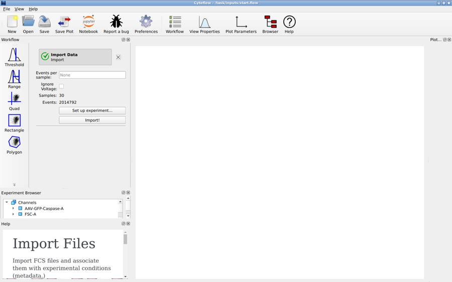
cd /task; cu click 408 713; sleep 1; cu click 408 614; sleep 1; cu click 651 75; sleep 1; cu screenshot /tmp/screen.png
{
"file_path": "/tmp/screen.png"
}/tmp/screen.png
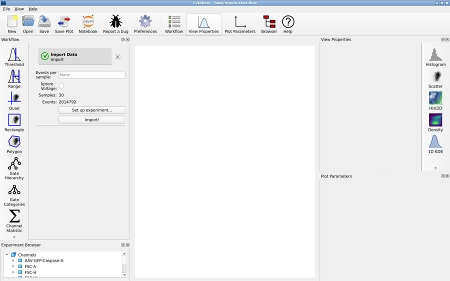
cd /task; cu click 408 784; sleep 1; cu click 1393 180; sleep 2; cu screenshot /tmp/screen.png
{
"file_path": "/tmp/screen.png"
}/tmp/screen.png
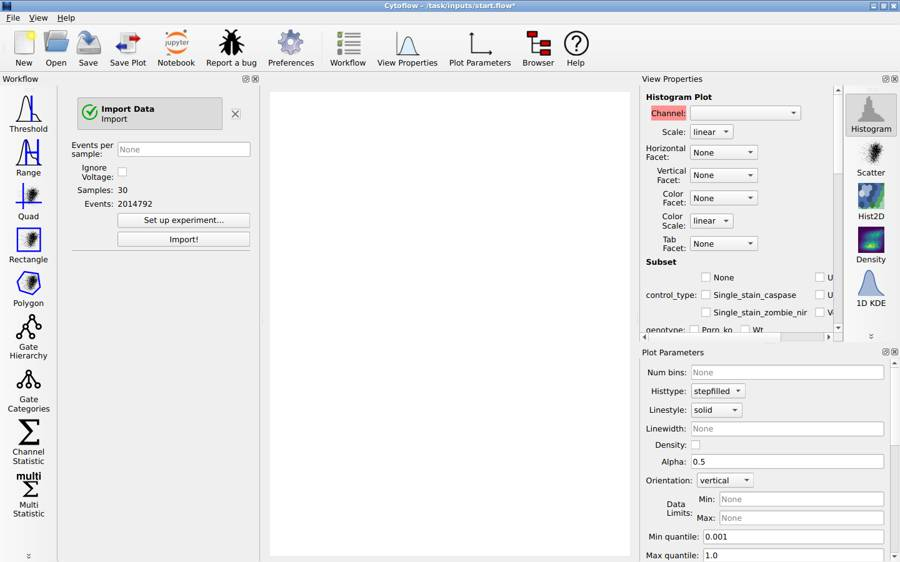
cd /task; cu click 1191 181; sleep 1; cu screenshot /tmp/screen.png
{
"file_path": "/tmp/screen.png"
}/tmp/screen.png
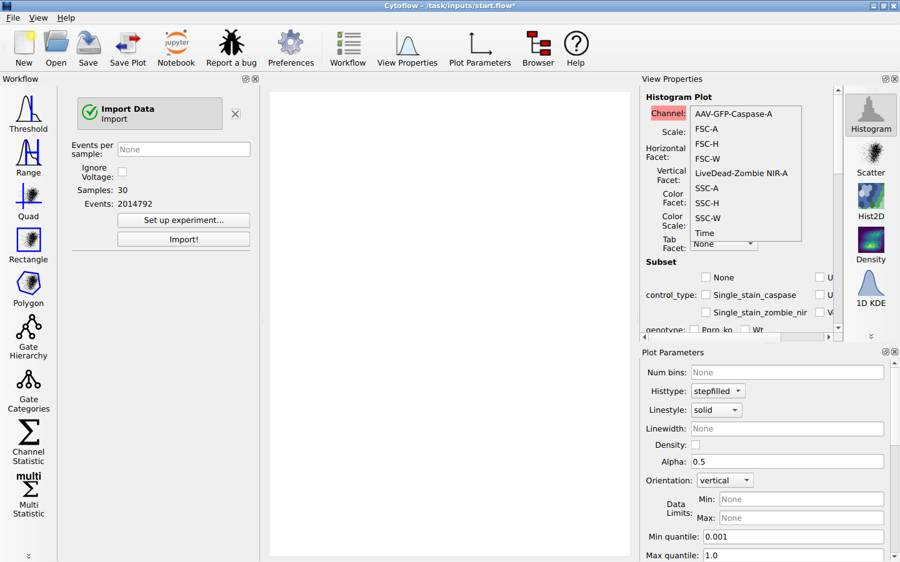
cd /task; cu click 1127 373; sleep 1; cu click 1157 390; sleep 1; cu screenshot /tmp/screen.png
{
"file_path": "/tmp/screen.png"
}/tmp/screen.png
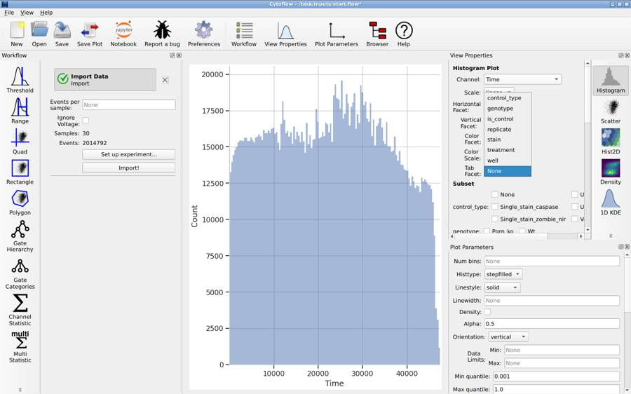
cd /task; cu key Escape; sleep 0.5; cu click 45 889; sleep 1; cu screenshot /tmp/screen.png
{
"file_path": "/tmp/screen.png"
}/tmp/screen.png
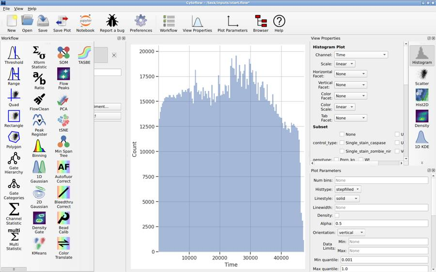
cd /task; cu click 129 490; sleep 2; cu screenshot /tmp/screen.png
{
"file_path": "/tmp/screen.png"
}/tmp/screen.png
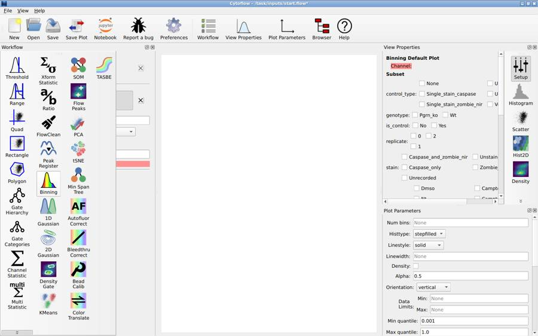
cd /task; cu click 720 500; sleep 1; cu screenshot /tmp/screen.png
{
"file_path": "/tmp/screen.png"
}/tmp/screen.png
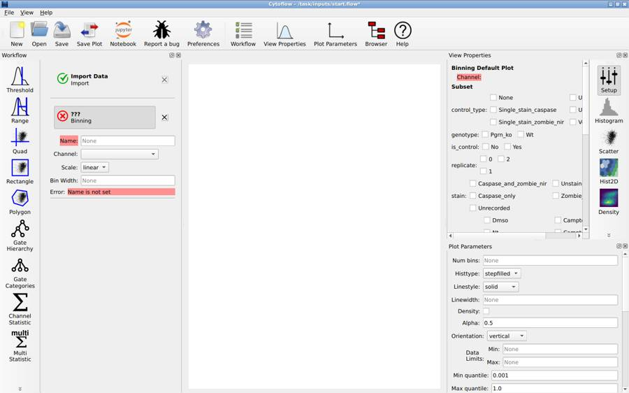
cd /task; cu click 292 322; cu type "Tbin"; cu key Tab; sleep 0.5; cu click 272 353; sleep 1; cu screenshot /tmp/screen.png
{
"file_path": "/tmp/screen.png"
}/tmp/screen.png
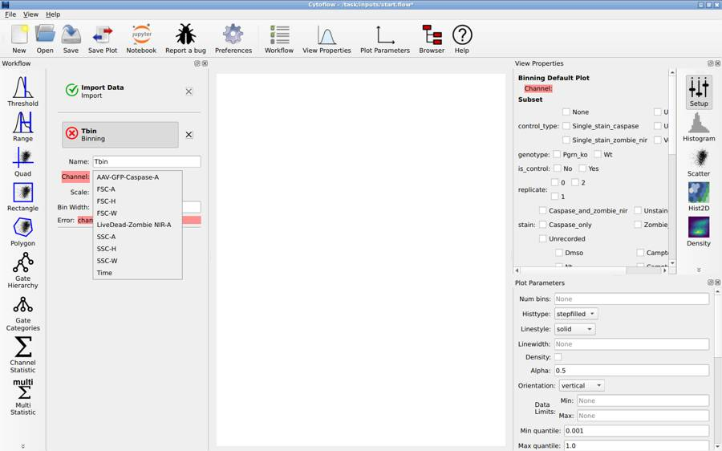
cd /task; cu click 208 544; sleep 1; cu click 292 413; cu type "1000"; cu key Tab; sleep 5; cu screenshot /tmp/screen.png
{
"file_path": "/tmp/screen.png"
}/tmp/screen.png
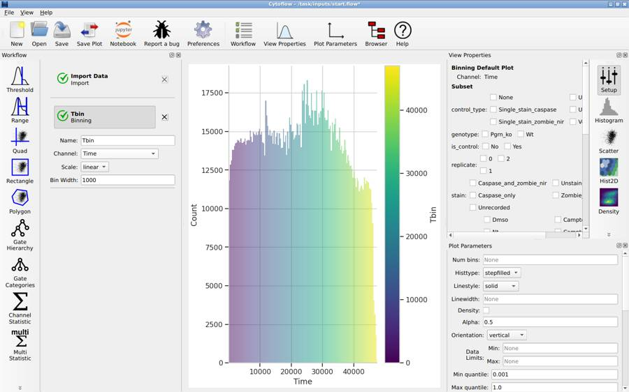
cd /task; cu click 45 700; sleep 2; cu screenshot /tmp/screen.png
{
"file_path": "/tmp/screen.png"
}/tmp/screen.png
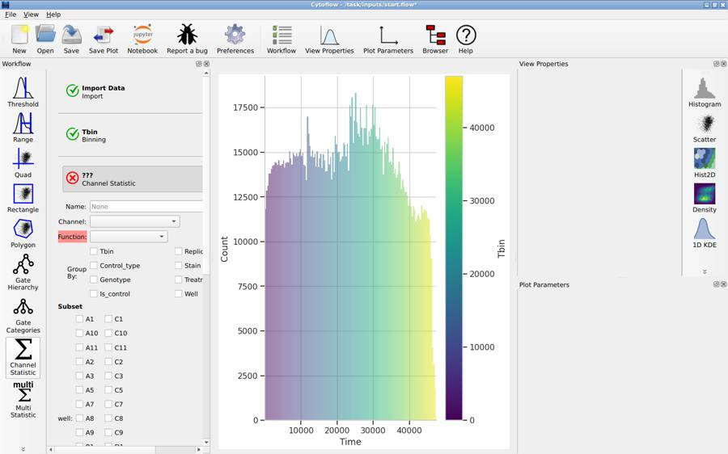
cd /task; cu drag 420 510 520 510; sleep 1; cu click 250 409; cu type "TimeCount"; cu key Tab; sleep 0.5; cu click 265 439; sleep 1; cu screenshot /tmp/screen.png
{
"file_path": "/tmp/screen.png"
}/tmp/screen.png
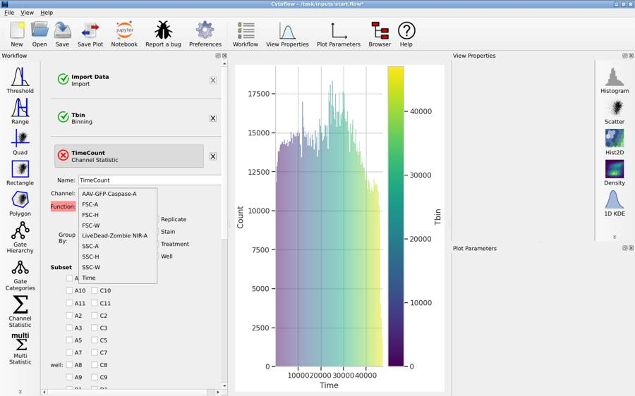
cd /task; cu click 202 631; sleep 1; cu click 255 469; sleep 1; cu screenshot /tmp/screen.png
{
"file_path": "/tmp/screen.png"
}/tmp/screen.png
cd /task; cu click 205 470; sleep 1; cu screenshot /tmp/screen.png
{
"file_path": "/tmp/screen.png"
}/tmp/screen.png
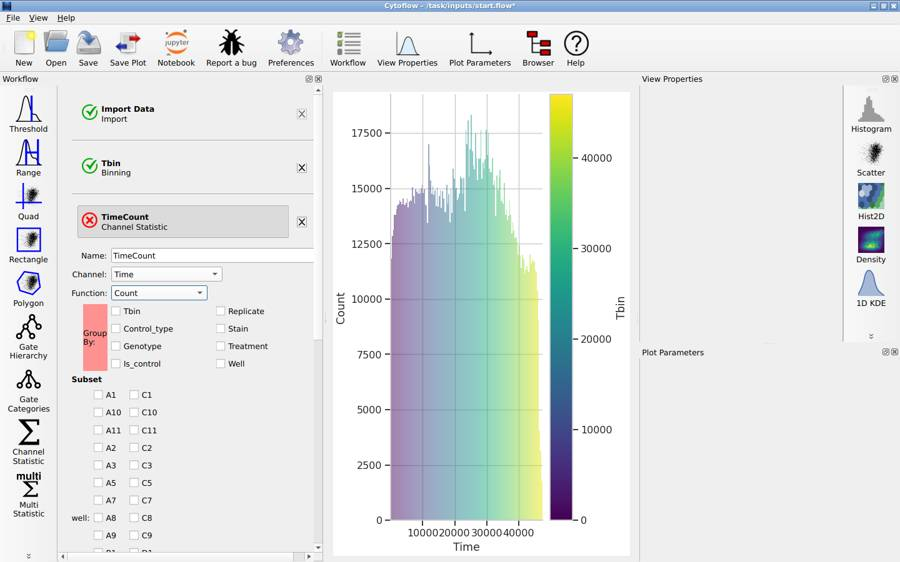
cd /task; cu click 186 498; sleep 0.5; cu click 353 582; sleep 4; cu screenshot /tmp/screen.png
{
"file_path": "/tmp/screen.png"
}/tmp/screen.png
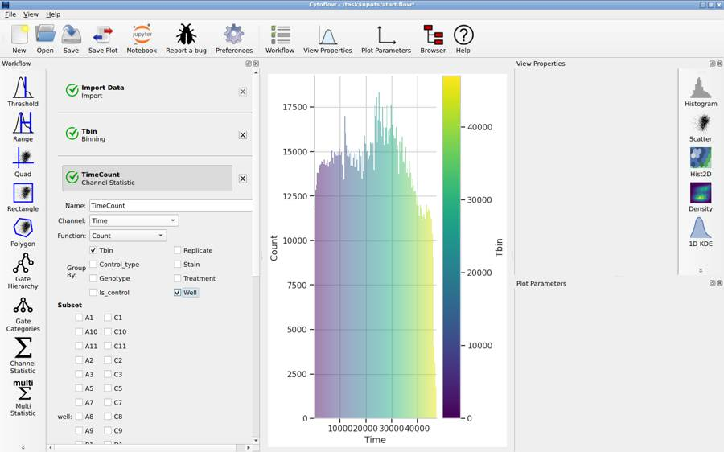
cd /task; cu click 1393 538; sleep 1; cu screenshot /tmp/screen.png
{
"file_path": "/tmp/screen.png"
}/tmp/screen.png
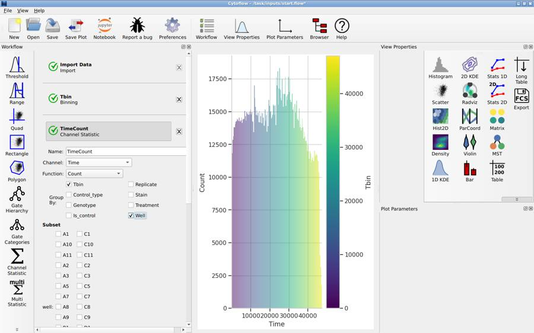
cd /task; cu click 1405 190; sleep 2; cu screenshot /tmp/screen.png
{
"file_path": "/tmp/screen.png"
}/tmp/screen.png
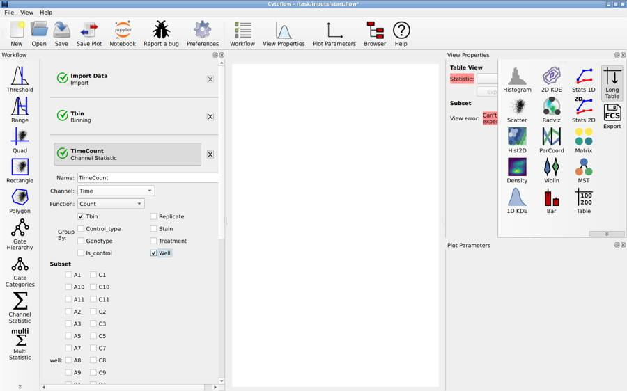
cd /task; cu click 770 600; sleep 1; cu click 1190 181; sleep 1; cu screenshot /tmp/screen.png
{
"file_path": "/tmp/screen.png"
}/tmp/screen.png
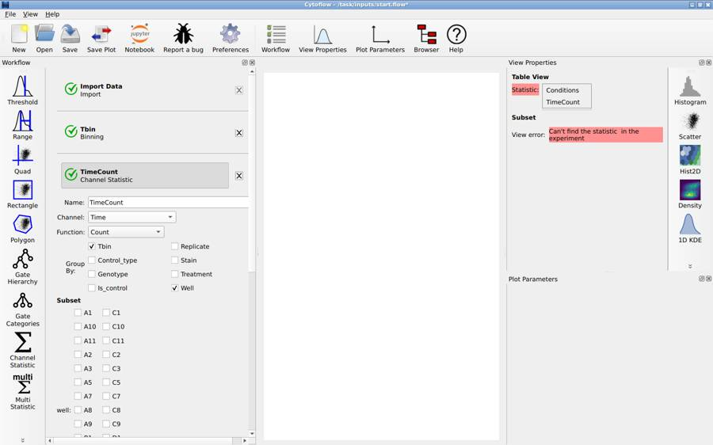
cd /task; cu click 1137 206; sleep 3; cu screenshot /tmp/screen.png
{
"file_path": "/tmp/screen.png"
}/tmp/screen.png
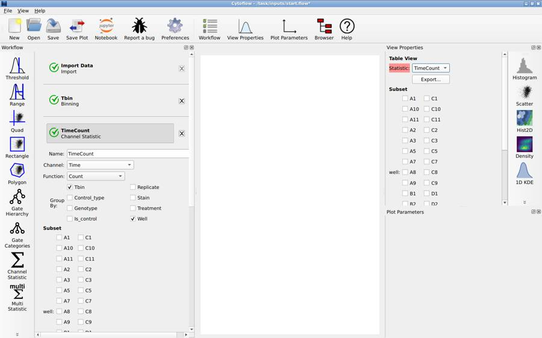
cd /task; mkdir -p /tmp/exp; cu click 1144 211; sleep 2; cu screenshot /tmp/screen.png
{
"file_path": "/tmp/screen.png"
}/tmp/screen.png
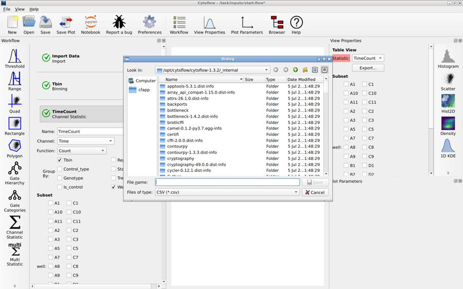
cd /task; cu paste "/tmp/exp/timecount.csv"; sleep 0.5; cu key Return; sleep 3; cu screenshot /tmp/screen.png; ls -la /tmp/exp; head -5 /tmp/exp/timecount.csv; wc -l /tmp/exp/timecount.csv
Exit code 1 /tmp/screen.png total 8 drwxr-xr-x 2 root root 4096 Nov 10 19:17 . drwxrwxrwx 9 root root 4096 Nov 10 19:17 .. head: cannot open '/tmp/exp/timecount.csv' for reading: No such file or directory wc: /tmp/exp/timecount.csv: No such file or directory
{
"file_path": "/tmp/screen.png"
}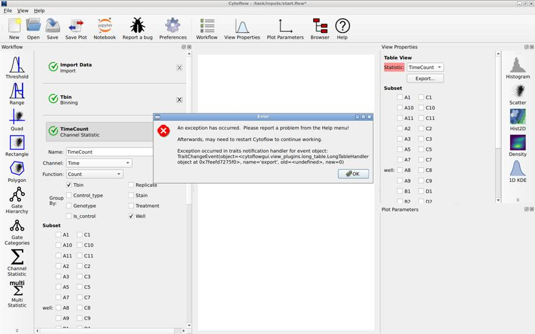
cd /task; cu click 950 468; sleep 1; cu click 1393 538; sleep 1; cu click 1340 460; sleep 1; cu click 770 700; sleep 2; cu screenshot /tmp/screen.png
{
"file_path": "/tmp/screen.png"
}/tmp/screen.png
cd /task; cu click 1163 181; sleep 1; cu screenshot /tmp/screen.png
{
"file_path": "/tmp/screen.png"
}/tmp/screen.png
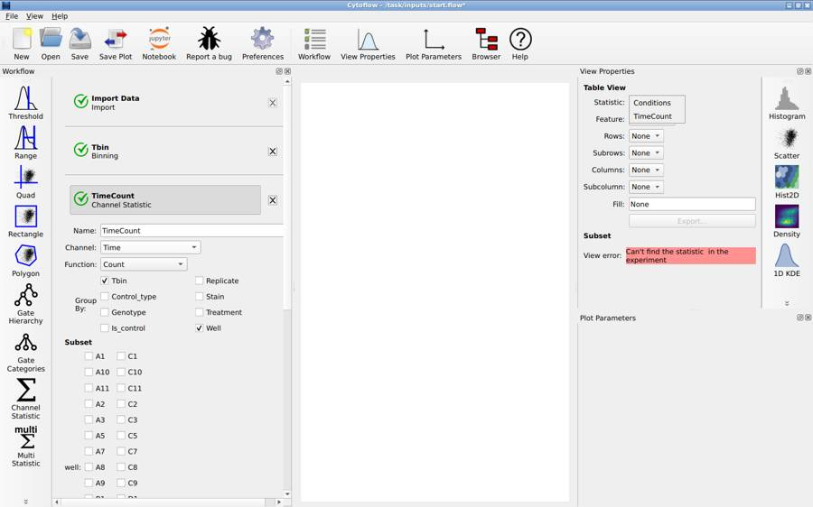
cd /task; cu click 1156 206; sleep 2; cu click 1143 241; sleep 1; cu screenshot /tmp/screen.png
{
"file_path": "/tmp/screen.png"
}/tmp/screen.png
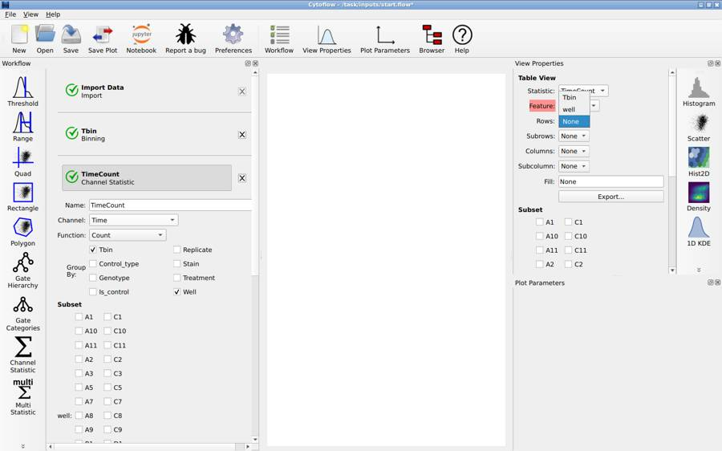
cd /task; cu click 1135 195; sleep 1; cu click 1143 301; sleep 1; cu screenshot /tmp/screen.png
{
"file_path": "/tmp/screen.png"
}/tmp/screen.png
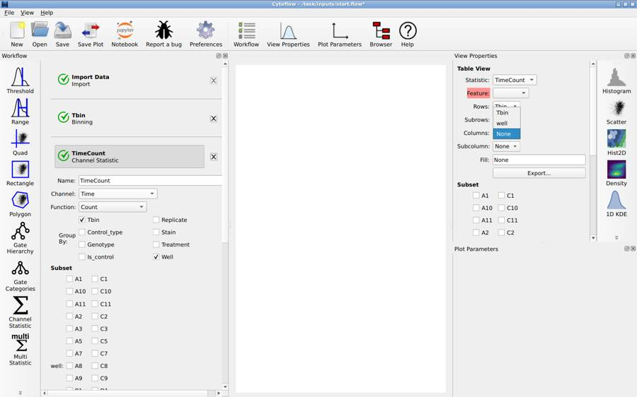
cd /task; cu click 1135 279; sleep 1; cu click 1154 211; sleep 1; cu screenshot /tmp/screen.png
{
"file_path": "/tmp/screen.png"
}/tmp/screen.png
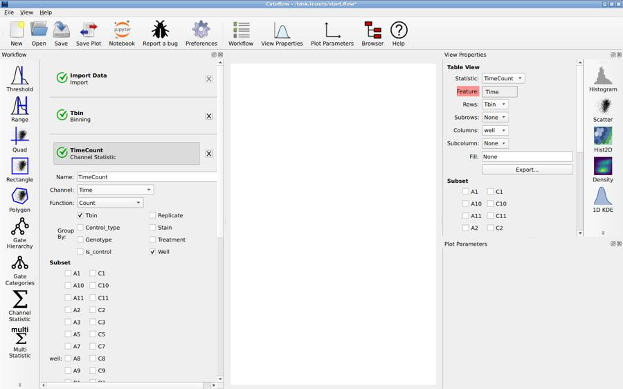
cd /task; cu click 1137 213; sleep 3; cu click 1218 392; sleep 2; cu screenshot /tmp/screen.png
{
"file_path": "/tmp/screen.png"
}/tmp/screen.png
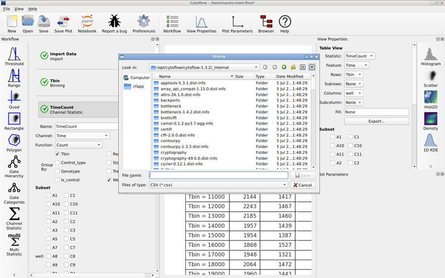
cd /task; cu paste "/tmp/exp/timecount.csv"; sleep 0.5; cu key Return; sleep 3; cu screenshot /tmp/screen.png; ls -la /tmp/exp; head -5 /tmp/exp/timecount.csv; wc -l /tmp/exp/timecount.csv
Exit code 1 /tmp/screen.png total 8 drwxr-xr-x 2 root root 4096 Nov 10 19:17 . drwxrwxrwx 9 root root 4096 Nov 10 19:18 .. head: cannot open '/tmp/exp/timecount.csv' for reading: No such file or directory wc: /tmp/exp/timecount.csv: No such file or directory
{
"file_path": "/tmp/screen.png"
}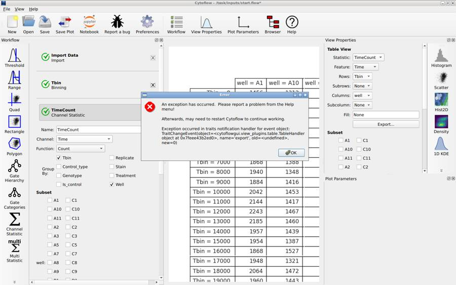
cd /task; chmod 777 /tmp/exp; ps aux | grep -i cytoflow | head -3; id; cu click 919 482; sleep 1; cu click 1218 392; sleep 2; cu paste "/tmp/exp/timecount.csv"; sleep 0.5; cu key Return; sleep 3; cu screenshot /tmp/screen.png; ls -la /tmp/exp; head -3 /tmp/exp/timecount.csv; wc -l /tmp/exp/timecount.csv
root 833 0.0 0.0 4748 3164 ? S 19:13 0:00 runuser -u cfapp -- env DISPLAY=:1 HOME=/home/cfapp XDG_RUNTIME_DIR=/tmp/runtime-cfapp LANG=C.UTF-8 LC_ALL=C.UTF-8 bash -c umask 002; cd /task; exec start-cytoflow cfapp 835 0.0 0.0 4764 3728 ? S 19:13 0:00 /bin/bash /usr/local/bin/start-cytoflow cfapp 841 1.7 6.8 3622800 554644 ? Sl 19:13 0:05 /opt/cytoflow/cytoflow-1.3.2/cytoflow uid=0(root) gid=0(root) groups=0(root) /tmp/screen.png total 20 drwxrwxrwx 2 root root 4096 Nov 10 19:18 . drwxrwxrwx 9 root root 4096 Nov 10 19:18 .. -rw-rw-r-- 1 cfapp cfapp 10756 Nov 10 19:18 timecount.csv None,well = A1,well = A10,well = A11,well = A2,well = A3,well = A5,well = A7,well = A8,well = A9,well = B1,well = B2,well = B3,well = B4,well = B5,well = B6,well = C1,well = C10,well = C11,well = C2,well = C3,well = C5,well = C7,well = C8,well = C9,well = D1,well = D2,well = D3,well = D4,well = D5,well = D6 Tbin = 0.0,1456.0,1312.0,1217.0,1434.0,1592.0,1505.0,1219.0,1170.0,1471.0,1031.0,792.0,237.0,1215.0,686.0,134.0,1643.0,1897.0,1469.0,1479.0,1367.0,1547.0,2315.0,1015.0,1718.0,2020.0,1364.0,1406.0,958.0,254.0,879.0 Tbin = 1000.0,1709.0,1415.0,1369.0,1595.0,1892.0,1597.0,1415.0,1225.0,1575.0,1147.0,901.0,274.0,1320.0,725.0,163.0,1857.0,2044.0,1489.0,1522.0,1368.0,1780.0,2607.0,1117.0,1978.0,2272.0,1351.0,1512.0,1030.0,396.0,1041.0 49 /tmp/exp/timecount.csv
cd /tmp/exp; python3 -c "
import pandas as pd, numpy as np
pd.set_option('display.width',250); pd.set_option('display.max_columns',40); pd.set_option('display.max_rows',100)
d=pd.read_csv('timecount.csv',index_col=0)
d.columns=[c.split('= ')[1] for c in d.columns]
d.index=[int(float(i.split('= ')[1])/1000) for i in d.index]
order=['A1','A2','A3','A5','A7','A8','A9','A10','A11','B1','B2','B3','B4','B5','B6','C1','C2','C3','C5','C7','C8','C9','C10','C11','D1','D2','D3','D4','D5','D6']
d=d[order]
print(d.iloc[:, :15].fillna(-1).astype(int).to_string())
print(d.iloc[:, 15:].fillna(-1).astype(int).to_string())
print(d.sum().astype(int).to_string())
" A1 A2 A3 A5 A7 A8 A9 A10 A11 B1 B2 B3 B4 B5 B6
0 1456 1434 1592 1505 1219 1170 1471 1312 1217 1031 792 237 1215 686 134
1 1709 1595 1892 1597 1415 1225 1575 1415 1369 1147 901 274 1320 725 163
2 1846 1559 1949 1508 1439 1302 1678 1331 1405 1267 1007 294 1362 705 167
3 1785 1576 1937 1548 1386 1317 1668 1350 1534 1262 1078 313 1312 735 155
4 1795 1628 1900 1546 1491 1288 1631 1372 1499 1249 1097 332 1334 759 151
5 1818 1623 1952 1615 1519 1269 1685 1399 1537 1190 1158 325 1255 691 170
6 2006 1649 2034 1665 1601 1260 1696 1430 1536 1320 985 315 1269 736 199
7 1868 1742 2047 1610 1687 1250 1717 1388 1533 1295 1130 327 1341 724 159
8 1940 1736 1983 1679 1654 1300 1780 1348 1462 1248 1111 316 1353 775 168
9 1884 1816 2120 1648 1626 1346 1727 1416 1495 1331 1114 316 1408 774 193
10 2042 1787 2083 1682 1508 1373 1702 1453 1523 1304 1092 353 1367 799 157
11 2144 1784 2069 1583 1402 1303 1700 1417 1550 1255 1179 310 1312 828 190
12 2243 1706 2157 1609 1550 1253 1700 1467 1546 1209 1207 316 1325 810 143
13 2185 1726 2107 1613 1539 1251 1755 1460 1493 1266 1202 319 1295 721 172
14 1957 1613 1939 1574 1446 1286 1772 1439 1521 1394 1059 322 1312 717 161
15 1954 1734 2122 1613 1432 1248 1664 1387 1434 1102 1204 312 1186 820 175
16 1868 1702 2024 1646 1381 1227 1680 1527 1616 1446 1088 316 1302 751 164
17 1948 1734 2031 1650 1388 1262 1872 1321 1456 1318 1167 321 1257 745 193
18 2064 1802 2050 1640 1351 1336 1636 1472 1445 1264 1134 317 1278 767 188
19 1960 1625 2004 1394 1328 1272 1704 1443 1429 1327 1122 289 1292 755 166
20 2055 1692 2058 1621 1290 1267 1732 1400 1378 1282 1113 314 1217 612 182
21 1938 1738 2051 1598 1354 1363 1809 1493 1584 1337 1111 325 1333 887 192
22 2038 1873 2023 1721 1464 1547 1896 1581 1639 1487 1137 330 1408 761 209
23 2134 2031 2249 1763 1606 1600 2041 1602 1594 1499 1152 328 1529 907 206
24 2468 1968 2385 1790 1615 1606 2143 1702 1808 1471 1232 349 1441 797 212
25 2363 2572 2549 2011 1720 1635 2120 1844 1299 1102 1313 326 1404 701 197
26 2460 2299 2493 1855 1788 1579 2150 1727 2022 1569 1401 341 1348 902 184
27 2121 2156 2574 1872 1637 1669 2161 1625 1876 506 1282 318 843 482 194
28 2090 2204 2482 1889 1493 1575 2065 1755 1744 1187 1326 341 1774 917 177
29 2330 2243 2442 1819 1561 1580 2022 1578 1704 2405 1375 306 1476 888 199
30 2224 1755 2320 1762 1426 1524 1968 1565 1639 1508 1232 335 1061 787 173
31 2065 1962 2303 1811 1542 1479 1964 1426 1620 1409 1251 325 1480 779 176
32 2005 2017 2373 1801 1430 1490 1950 1424 1535 1383 1180 355 1390 753 195
33 2027 1968 2287 1738 1414 1370 1857 1429 1554 1300 1117 271 1360 753 175
34 1783 1773 2203 1650 1323 1323 1730 1373 1641 1321 1106 268 1257 701 173
35 2002 1599 2091 1636 1334 1276 1592 1287 1478 1340 1085 268 1255 683 172
36 1934 1781 1996 1607 1330 1144 1744 1314 1500 1277 971 247 1229 713 165
37 1813 1781 2043 1529 1245 1104 1722 1178 1372 1260 1007 229 1174 745 166
38 1780 1679 2015 1437 1265 1058 1642 1149 1293 1054 955 245 1120 717 164
39 1467 1699 1926 1327 1129 1095 1511 1195 1320 951 1058 233 1009 670 121
40 1340 1578 1712 1232 1027 1026 1528 1091 1212 1009 1015 242 986 593 164
41 1471 1467 1639 1129 1027 920 1430 1018 1168 1067 947 232 1140 560 138
42 1544 1362 1579 1238 1088 863 1397 939 1139 1009 976 225 1074 610 115
43 1530 1347 1516 1264 1116 917 1365 967 1103 953 885 214 1044 582 163
44 1361 1328 1565 1134 1056 1041 1310 1012 1076 940 949 248 980 490 152
45 1531 1286 1449 1217 1039 859 1105 1117 1014 1042 869 280 1184 543 159
46 1660 279 1475 377 294 667 511 841 384 417 927 242 171 198 97
47 645 -1 143 -1 -1 101 -1 157 -1 -1 131 34 -1 -1 16
C1 C2 C3 C5 C7 C8 C9 C10 C11 D1 D2 D3 D4 D5 D6
0 1643 1479 1367 1547 2315 1015 1718 1897 1469 2020 1364 1406 958 254 879
1 1857 1522 1368 1780 2607 1117 1978 2044 1489 2272 1351 1512 1030 396 1041
2 1863 1774 1445 1773 2721 1070 2083 1937 1418 2309 1522 1745 1002 371 1131
3 1987 1662 1377 1956 2635 1061 2001 1982 1484 2309 1539 1772 1056 378 1060
4 1988 1684 1452 1797 2492 1113 1986 1966 1430 2402 1543 1664 1021 331 959
5 1966 1531 1348 1911 2599 1154 2027 2051 1453 2245 1496 1601 971 423 1081
6 2011 1628 1540 1971 2709 1201 1901 1961 1344 2241 1505 1687 1053 412 1069
7 1962 1659 1521 1892 2651 1151 2047 1859 1368 2243 1598 1620 1075 396 1098
8 2114 1620 1526 2087 2694 1180 2011 2042 1374 2166 1685 1652 1040 412 1094
9 2155 1725 1571 2200 2683 1154 1912 1928 1442 2155 1603 1742 910 434 1090
10 2168 1703 1542 2245 2675 1256 1042 1464 1201 2225 1753 1840 1145 404 1161
11 2088 1708 1624 2221 2788 1125 2333 1359 1147 2110 1678 1892 1095 428 1068
12 2018 1671 1461 2055 2742 1137 2545 2652 1685 2408 1562 1520 1033 377 1079
13 1988 1705 1500 2229 2753 1184 2021 1902 1423 2094 1698 1546 1039 410 1142
14 2042 1743 1438 1987 2621 1169 2061 2009 1429 2127 1601 1328 869 394 1106
15 2027 1724 1493 2022 2791 1103 2042 1770 1428 2087 1755 1400 1099 458 1082
16 2109 1583 1525 2049
… [3,366 more characters not shown]cd /tmp/exp; python3 -c "
import pandas as pd, numpy as np
d=pd.read_csv('timecount.csv',index_col=0)
d.columns=[c.split('= ')[1] for c in d.columns]
d.index=[int(float(i.split('= ')[1])/1000) for i in d.index]
d=d.iloc[:46] # full seconds 0..45
for w in d.columns:
s=d[w]
med=s.rolling(9,center=True,min_periods=5).median()
r=s/med
bad=r[(r<0.7)|(r>1.3)]
print(w, int(s.sum()), 'median/s',int(s.median()), 'CV%.2f'%(s.std()/s.mean()), 'nbad',len(bad), ' '.join(f'{i}:{v:.2f}' for i,v in bad.items()))
"A1 88346 median/s 1951 CV0.14 nbad 0 A10 63938 median/s 1415 CV0.14 nbad 0 A11 67912 median/s 1499 CV0.14 nbad 0 A2 80729 median/s 1734 CV0.15 nbad 0 A3 94315 median/s 2045 CV0.13 nbad 0 A5 73376 median/s 1614 CV0.13 nbad 0 A7 64681 median/s 1420 CV0.14 nbad 0 A8 59448 median/s 1281 CV0.16 nbad 0 A9 79767 median/s 1710 CV0.13 nbad 0 B1 57893 median/s 1266 CV0.20 nbad 2 27:0.34 29:1.74 B2 50872 median/s 1112 CV0.12 nbad 0 B3 13719 median/s 315 CV0.13 nbad 0 B4 58611 median/s 1298 CV0.13 nbad 1 27:0.59 B5 33556 median/s 740 CV0.14 nbad 1 27:0.60 B6 7891 median/s 171 CV0.13 nbad 0 C1 95311 median/s 2026 CV0.17 nbad 2 29:0.57 30:1.63 C10 87875 median/s 1931 CV0.22 nbad 4 12:1.38 26:0.23 27:1.61 30:1.47 C11 63440 median/s 1369 CV0.24 nbad 7 20:0.58 23:1.90 25:0.65 26:1.36 35:0.62 36:0.36 37:1.80 C2 79133 median/s 1704 CV0.14 nbad 2 27:0.62 28:1.46 C3 68015 median/s 1483 CV0.14 nbad 0 C5 87925 median/s 1918 CV0.13 nbad 0 C7 117627 median/s 2658 CV0.16 nbad 2 23:0.66 24:1.58 C8 52051 median/s 1144 CV0.15 nbad 0 C9 91659 median/s 2033 CV0.18 nbad 1 10:0.52 D1 96772 median/s 2085 CV0.15 nbad 2 24:0.46 25:1.59 D2 73540 median/s 1602 CV0.13 nbad 0 D3 76726 median/s 1610 CV0.36 nbad 8 16:0.46 18:0.19 19:2.74 20:1.48 22:0.62 28:0.39 29:1.69 38:1.39 D4 46549 median/s 1025 CV0.27 nbad 8 27:0.41 29:0.60 30:1.34 31:0.66 32:0.16 33:1.95 34:1.36 45:0.60 D5 18262 median/s 403 CV0.18 nbad 5 0:0.68 17:0.60 25:0.52 29:0.65 31:1.35 D6 46526 median/s 1055 CV0.24 nbad 8 22:0.61 23:0.34 24:1.33 25:1.42 30:0.48 32:0.28 33:0.57 34:1.56 Shell cwd was reset to /task
cd /task; cu click 483 355; sleep 2; cu click 483 268; sleep 2; cu screenshot /tmp/screen.png
{
"file_path": "/tmp/screen.png"
}/tmp/screen.png
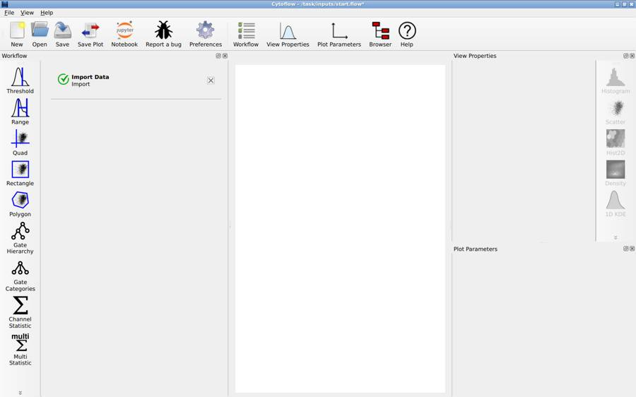
cd /task; cu click 45 460; sleep 2; cu click 300 322; sleep 0.3; cu screenshot /tmp/screen.png
{
"file_path": "/tmp/screen.png"
}/tmp/screen.png
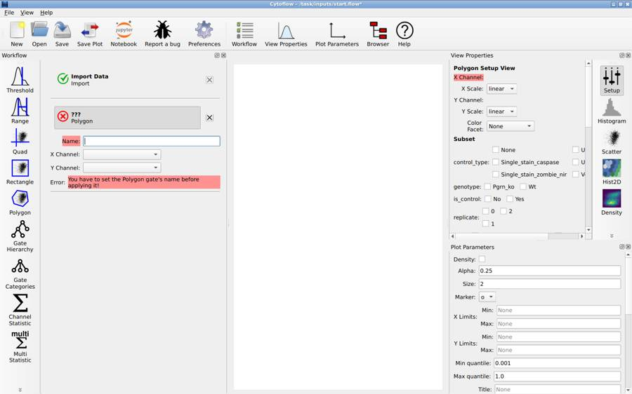
cd /task; cu type "Cells"; cu key Tab; sleep 0.5; cu click 277 353; sleep 1; cu click 211 377; sleep 1; cu click 277 383; sleep 1; cu screenshot /tmp/screen.png
{
"file_path": "/tmp/screen.png"
}/tmp/screen.png
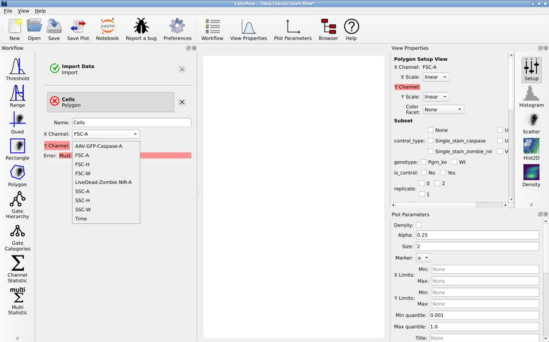
cd /task; cu click 216 503; sleep 15; cu screenshot /tmp/screen.png
{
"file_path": "/tmp/screen.png"
}/tmp/screen.png
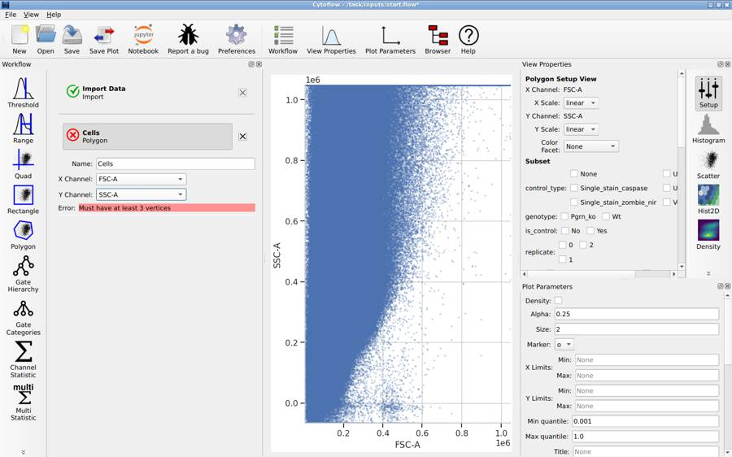
cd /task; cu click 1098 592; sleep 15; cu screenshot /tmp/screen.png
{
"file_path": "/tmp/screen.png"
}/tmp/screen.png
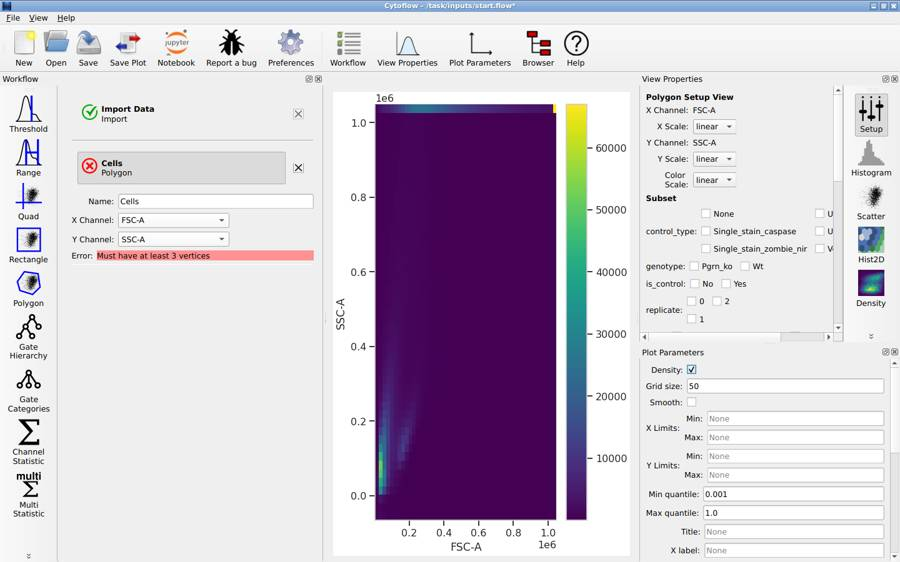
cd /task; cu click 1142 203; sleep 1; cu screenshot /tmp/screen.png
{
"file_path": "/tmp/screen.png"
}/tmp/screen.png
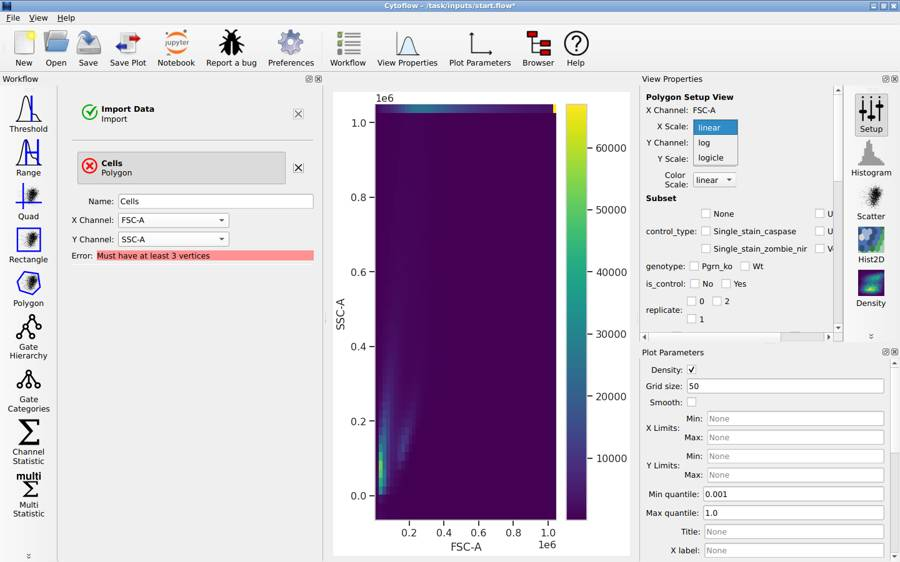
cd /task; cu click 1127 228; sleep 6; cu click 1142 255; sleep 1; cu click 1127 281; sleep 6; cu click 1142 288; sleep 1; cu screenshot /tmp/s1.png; cu click 1127 314; sleep 12; cu screenshot /tmp/screen.png
{
"file_path": "/tmp/screen.png"
}/tmp/s1.png /tmp/screen.png
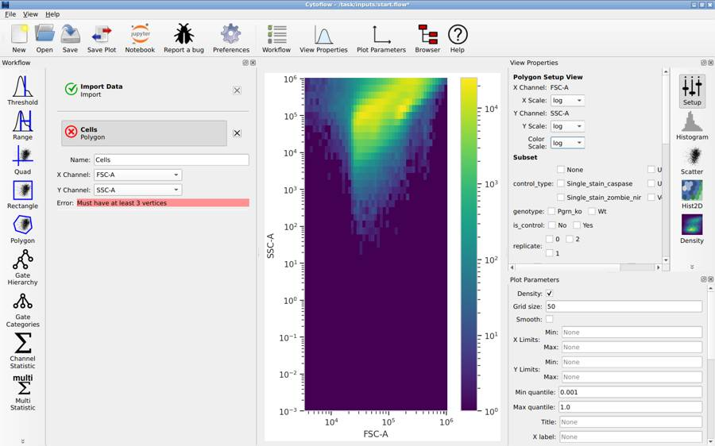
cd /task; cu click 1273 618 double; cu key ctrl+a; cu type "100"; cu key Tab; sleep 1; cu click 1273 670; cu type "3000"; cu key Tab; sleep 1; cu click 1273 730; cu type "1000"; cu key Tab; sleep 15; cu screenshot /tmp/screen.png
{
"file_path": "/tmp/screen.png"
}/tmp/screen.png
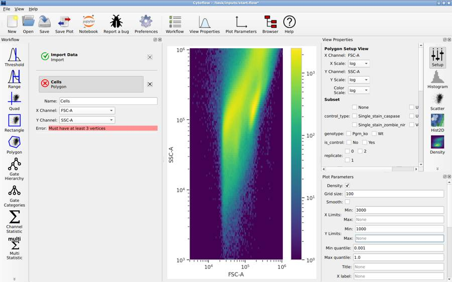
cd /task; cu click 1142 203; sleep 1; cu click 1134 204; sleep 5; cu click 1142 255; sleep 1; cu click 1134 256; sleep 5; cu click 1273 670; cu key ctrl+a; cu type "0"; cu key Tab; cu click 1273 730; cu key ctrl+a; cu type "0"; cu key Tab; sleep 15; cu screenshot /tmp/screen.png
{
"file_path": "/tmp/screen.png"
}/tmp/screen.png
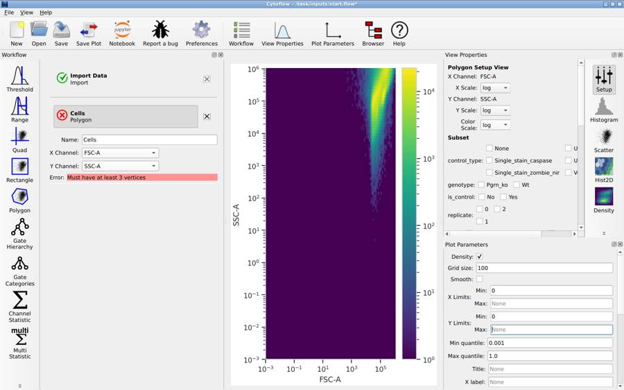
cd /task; cu click 1142 203; sleep 1; cu screenshot /tmp/screen.png
{
"file_path": "/tmp/screen.png"
}/tmp/screen.png
cd /task; cu click 1134 180; sleep 6; cu click 1142 255; sleep 1; cu click 1134 231; sleep 18; cu screenshot /tmp/screen.png
{
"file_path": "/tmp/screen.png"
}/tmp/screen.png
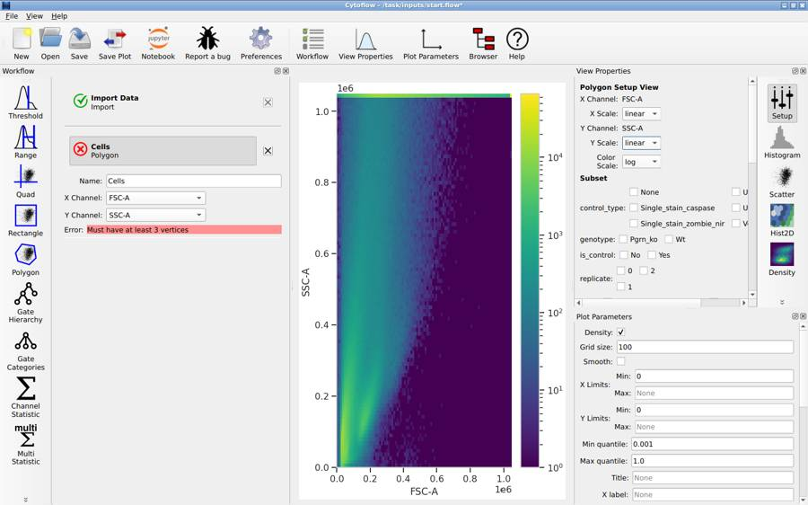
cd /task; cu click 1273 700; cu type "500000"; cu key Tab; cu click 1273 760; cu type "600000"; cu key Tab; sleep 18; cu screenshot /tmp/screen.png
{
"file_path": "/tmp/screen.png"
}/tmp/screen.png
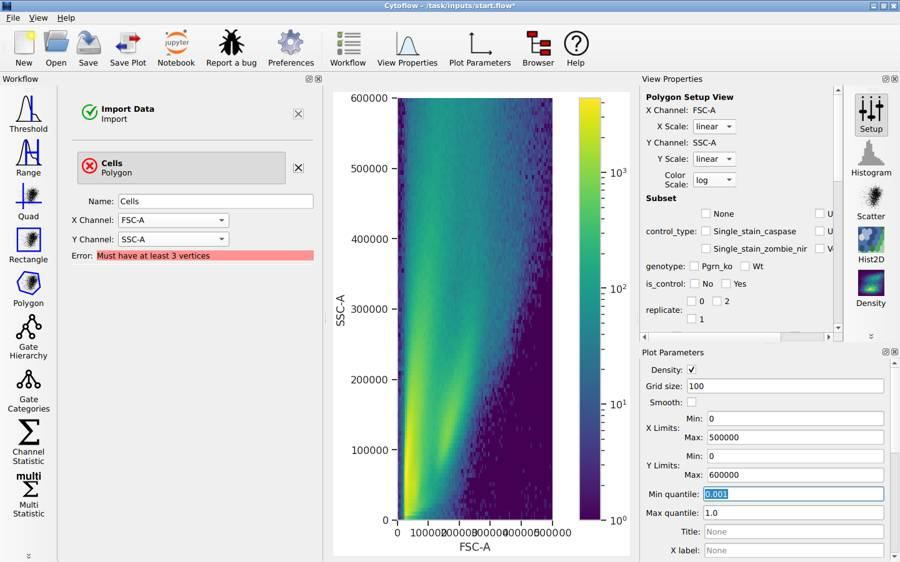
cd /task; date; cu drag 520 510 425 510; sleep 1; cu click 1273 700; cu key ctrl+a; cu type "450000"; cu key Tab; cu click 1273 760; cu key ctrl+a; cu type "500000"; cu key Tab; sleep 18; cu screenshot /tmp/screen.png
{
"file_path": "/tmp/screen.png"
}Tue Nov 10 19:23:49 UTC 2026 /tmp/screen.png
cd /task; for p in "634 765" "675 772" "729 711" "786 590" "823 427" "819 306" "778 279" "725 387" "671 542" "638 671"; do cu click $p; sleep 0.7; done; sleep 1; cu screenshot /tmp/screen.png
{
"file_path": "/tmp/screen.png"
}/tmp/screen.png
cd /task; cu click 634 765; sleep 15; cu screenshot /tmp/screen.png
{
"file_path": "/tmp/screen.png"
}/tmp/screen.png
cd /task; cu click 20 29; sleep 1; cu screenshot /tmp/screen.png
{
"file_path": "/tmp/screen.png"
}/tmp/screen.png
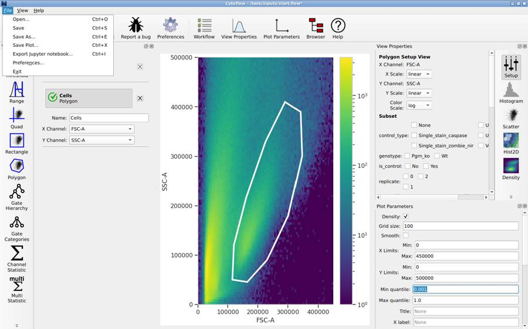
cd /task; cu click 65 100; sleep 2; cu paste "/task/outputs/workflow.flow"; sleep 0.5; cu key Return; sleep 3; cu screenshot /tmp/screen.png; ls -la outputs; grep -n -A30 "polygon" outputs/workflow.flow | head -60
{
"file_path": "/tmp/screen.png"
}/tmp/screen.png total 44 drwxrwsrwx 2 agent task 4096 Nov 10 19:25 . drwxr-xr-x 4 root root 4096 Nov 5 08:15 .. -rw-rw-r-- 1 cfapp task 35066 Nov 10 19:25 workflow.flow 1242: current_view: &id003 !polygon-view;3 1243- current_plot: null 1244- huefacet: '' 1245- huescale: log 1246: op: &id002 !polygon;1 1247- name: Cells 1248- vertices: 1249- - !!python/tuple 1250- - 115134.65263257566 1251- - 50336.206947178245 1252- - !!python/tuple 1253- - 164787.78310866293 1254- - 45716.92037012393 1255- - !!python/tuple 1256- - 230991.95707677922 1257- - 90370.02394831557 1258- - !!python/tuple 1259- - 301015.60261997924 1260- - 179676.2311046989 1261- - !!python/tuple 1262- - 346849.26152098284 1263- - 300547.5632042867 1264- - !!python/tuple 1265- - 341756.6327542047 1266- - 389853.77036067 1267- - !!python/tuple 1268- - 290830.34508642287 1269- - 409870.67886123864 1270- - !!python/tuple 1271- - 225899.32831000106 1272- - 329803.044858964 1273- - !!python/tuple 1274- - 160968.31153357925 1275- - 215860.64262495766 1276- - !!python/tuple -- 1283: plot_params: !polygon-params;1 1284- alpha: 0.25 1285- col_wrap: null 1286- density: true 1287- despine: true 1288- gridsize: 100 1289- huelabel: '' 1290- legend: true 1291- marker: o 1292- max_quantile: 1.0 1293- min_quantile: 0.001 1294- s: 2 1295- sharex: true 1296- sharey: true 1297- smoothed: false 1298- smoothed_sigma: 1.0 1299- sns_context: notebook 1300- sns_style: whitegrid 1301- title: '' 1302- xlabel: '' 1303- xlim: !!python/tuple 1304- - 0.0 1305- - 450000.0 1306- ylabel: ''
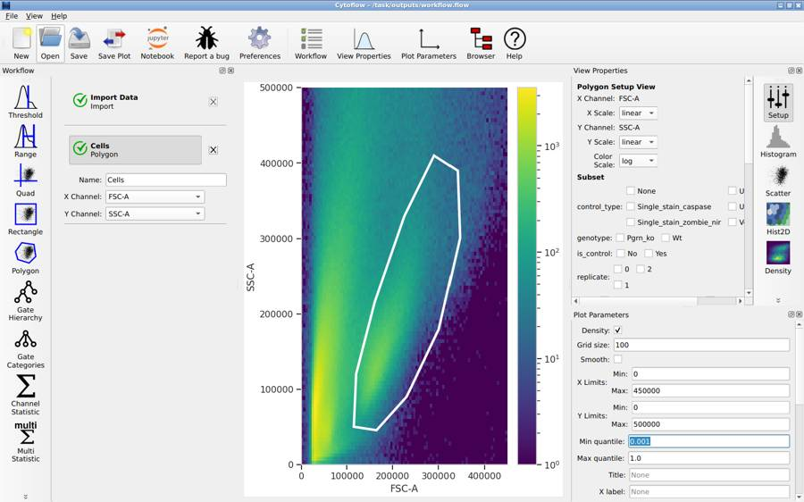
cd /task; cu click 45 460; sleep 2; cu click 300 409; sleep 0.3; cu type "Single_Cells"; cu key Tab; sleep 0.5; cu screenshot /tmp/screen.png
{
"file_path": "/tmp/screen.png"
}/tmp/screen.png
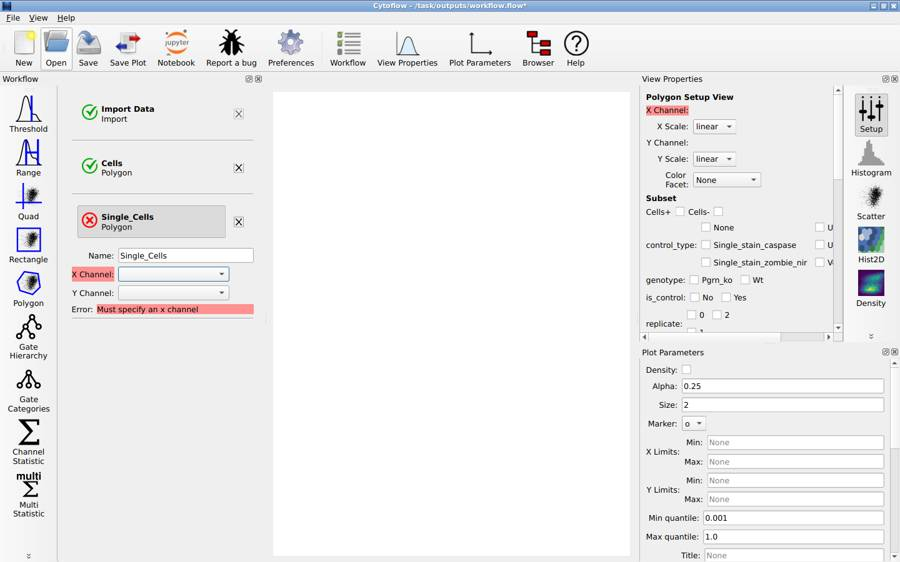
cd /task; cu click 1087 339; sleep 1; cu click 277 439; sleep 1; cu screenshot /tmp/s1.png; cu click 216 583; sleep 1; cu click 277 469; sleep 1; cu screenshot /tmp/s2.png; cu click 216 589; sleep 2; cu click 1098 592; sleep 10; cu screenshot /tmp/screen.png
{
"file_path": "/tmp/screen.png"
}/tmp/s1.png /tmp/s2.png /tmp/screen.png
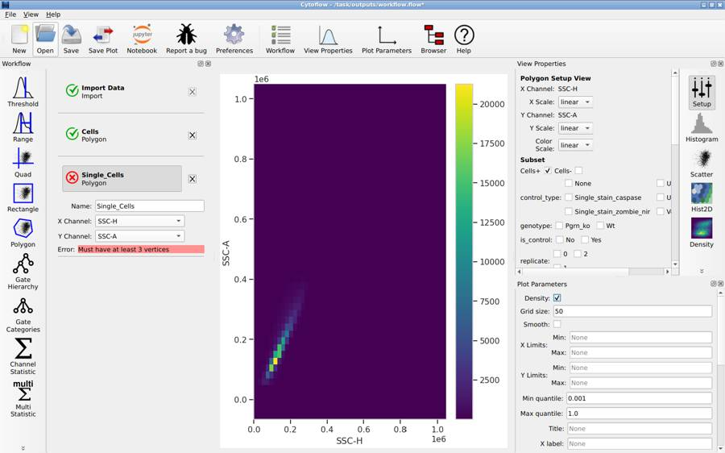
cd /task; cu click 1142 288; sleep 1; cu click 1127 314; sleep 5; cu click 1273 618 double; cu key ctrl+a; cu type "100"; cu key Tab; cu click 1273 670; cu type "0"; cu key Tab; cu click 1273 700; cu type "350000"; cu key Tab; cu click 1273 730; cu type "0"; cu key Tab; cu click 1273 760; cu type "450000"; cu key Tab; sleep 10; cu screenshot /tmp/screen.png
{
"file_path": "/tmp/screen.png"
}/tmp/screen.png
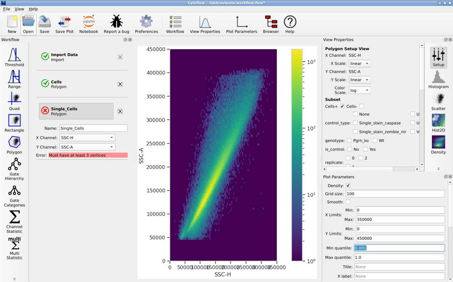
cd /task; for p in "557 773" "614 773" "876 210" "797 210" "557 773"; do cu click $p; sleep 0.8; done; sleep 10; cu screenshot /tmp/screen.png
{
"file_path": "/tmp/screen.png"
}/tmp/screen.png
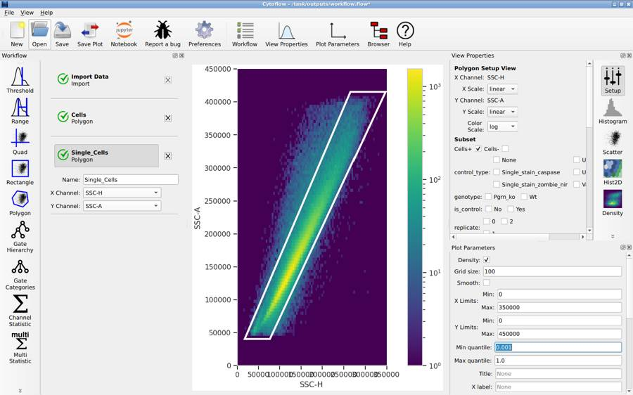
cd /task; cu key ctrl+s; sleep 2; cu click 45 390; sleep 2; cu screenshot /tmp/screen.png
{
"file_path": "/tmp/screen.png"
}/tmp/screen.png
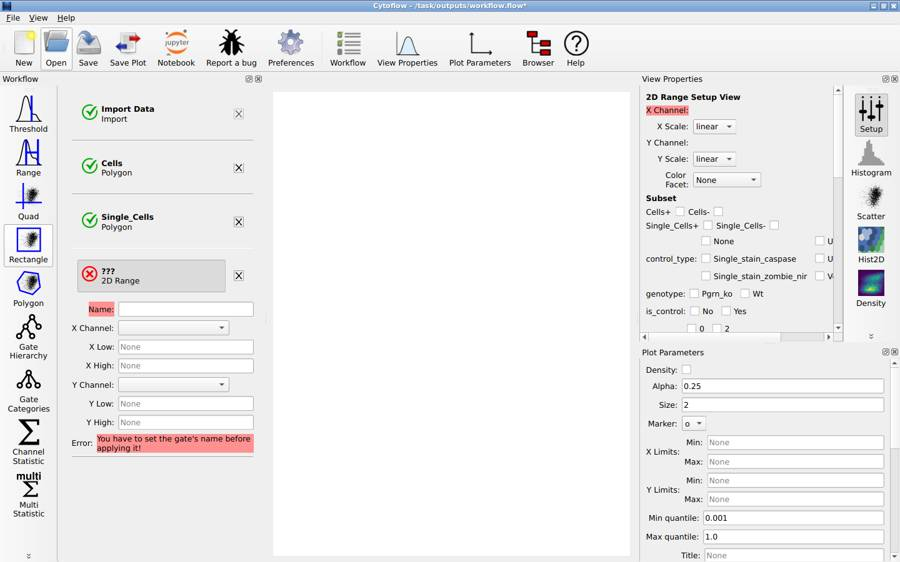
cd /task; cu click 297 495; cu type "Live"; cu key Tab; sleep 0.5; cu click 1087 339; sleep 0.5; cu click 1132 361; sleep 0.5; cu click 277 525; sleep 1; cu screenshot /tmp/s1.png; cu click 270 621; sleep 1; cu click 277 616; sleep 1; cu screenshot /tmp/s2.png; cu click 216 736; sleep 8; cu screenshot /tmp/screen.png
{
"file_path": "/tmp/screen.png"
}/tmp/s1.png /tmp/s2.png /tmp/screen.png
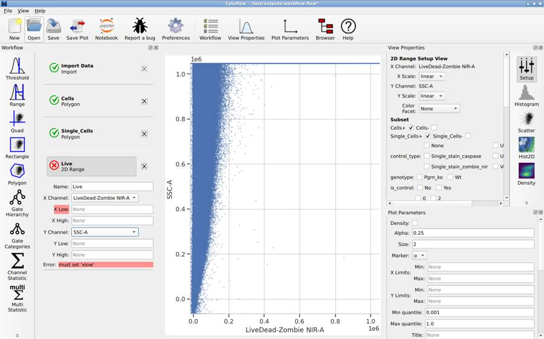
cd /task; cu click 1142 203; sleep 1; cu click 1137 252; sleep 6; cu click 1098 592; sleep 10; cu screenshot /tmp/screen.png
{
"file_path": "/tmp/screen.png"
}/tmp/screen.png

cd /task; sleep 8; cu screenshot /tmp/screen.png
{
"file_path": "/tmp/screen.png"
}/tmp/screen.png
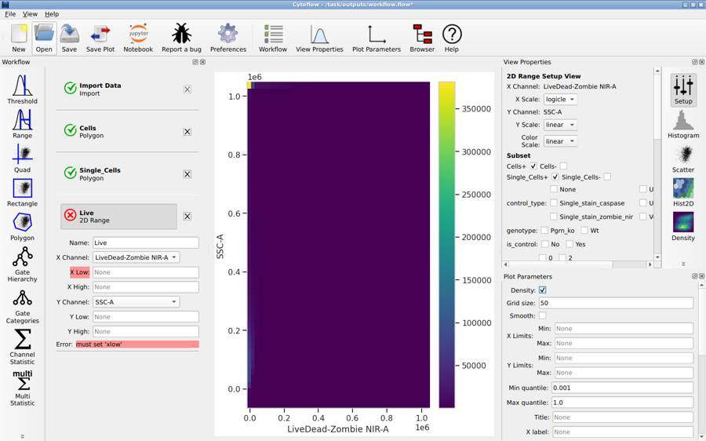
thinking
The Live gate's setup plot isn't refreshing until bounds are entered, so I'm switching to a standard histogram of Zombie NIR faceted by stain type to check where the negative population sits in the controls.
cd /task; cu click 240 355; sleep 2; cu click 1393 250; sleep 2; cu screenshot /tmp/screen.png
{
"file_path": "/tmp/screen.png"
}/tmp/screen.png
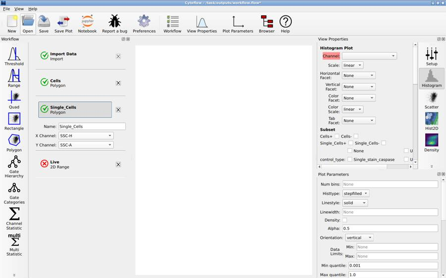
cd /task; cu click 1087 441; sleep 0.5; cu click 1132 463; sleep 0.5; cu click 1191 181; sleep 1; cu click 1186 277; sleep 3; cu click 1137 211; sleep 1; cu click 1137 260; sleep 3; cu click 1157 280; sleep 1; cu screenshot /tmp/screen.png
{
"file_path": "/tmp/screen.png"
}/tmp/screen.png
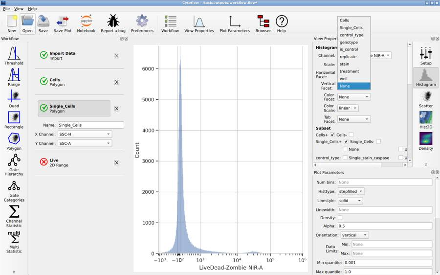
cd /task; cu click 1127 209; sleep 8; cu screenshot /tmp/screen.png
{
"file_path": "/tmp/screen.png"
}/tmp/screen.png
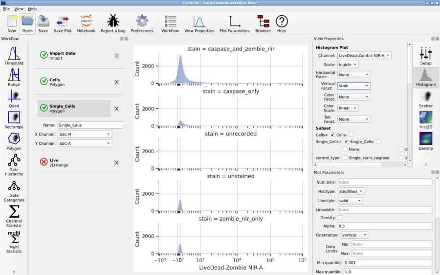
cd /task; cu click 1112 712; sleep 8; cu screenshot /tmp/screen.png
{
"file_path": "/tmp/screen.png"
}/tmp/screen.png
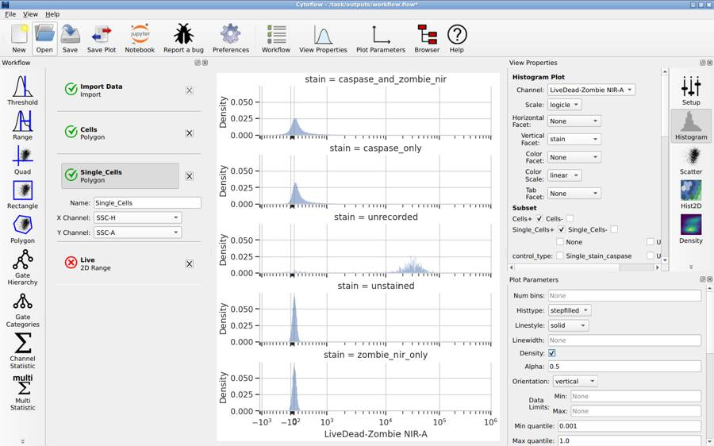
cd /task; cu click 1191 181; sleep 1; cu screenshot /tmp/s1.png;
{
"file_path": "/tmp/s1.png"
}/tmp/s1.png
thinking
The Zombie-only wells look identical to unstained in that channel, which seems off, so I'm checking the caspase channel to see whether the control labels got swapped.
cd /task; cu click 1173 87; sleep 8; cu screenshot /tmp/screen.png
{
"file_path": "/tmp/screen.png"
}/tmp/screen.png
cd /task; cu click 1393 320; sleep 2; cu screenshot /tmp/screen.png
{
"file_path": "/tmp/screen.png"
}/tmp/screen.png
cd /task; cu drag 1232 549 1232 840; sleep 1; cu screenshot /tmp/screen.png
{
"file_path": "/tmp/screen.png"
}/tmp/screen.png
cd /task; cu click 1087 531; sleep 0.4; cu click 1132 553; sleep 0.4; cu click 1161 691; sleep 0.4; cu click 1186 371; sleep 1; cu screenshot /tmp/s1.png
{
"file_path": "/tmp/s1.png"
}/tmp/s1.png
cd /task; cu click 1180 205; sleep 1; cu click 1186 408; sleep 1; cu click 1170 265; sleep 1; cu click 1165 211; sleep 1; cu click 1160 260; sleep 1; cu click 1165 271; sleep 1; cu click 1160 320; sleep 1; cu click 1220 181; sleep 1; cu click 1200 277; sleep 1; cu click 1220 241; sleep 1; cu click 1200 242; sleep 12; cu screenshot /tmp/screen.png
{
"file_path": "/tmp/screen.png"
}/tmp/screen.png
cd /task; cu click 557 75; sleep 10; cu screenshot /tmp/screen.png
{
"file_path": "/tmp/screen.png"
}/tmp/screen.png
cd /task; cu click 1393 250; sleep 3; cu screenshot /tmp/screen.png
{
"file_path": "/tmp/screen.png"
}/tmp/screen.png
cd /task; cu click 1161 600; sleep 3; cu click 1157 280; sleep 1; cu screenshot /tmp/s1.png; cu click 1150 184; sleep 3; cu click 1157 317; sleep 1; cu screenshot /tmp/s2.png; cu click 1150 173; sleep 3; cu click 1191 181; sleep 1; cu screenshot /tmp/s3.png
{
"file_path": "/tmp/s3.png"
}/tmp/s1.png /tmp/s2.png /tmp/s3.png
cd /task; cu click 1186 277; sleep 4; cu click 1137 211; sleep 1; cu click 1127 187; sleep 8; cu screenshot /tmp/screen.png
{
"file_path": "/tmp/screen.png"
}/tmp/screen.png
cd /task; cu click 1161 600; sleep 3; cu click 1157 280; sleep 1; cu click 1150 376; sleep 3; cu click 1157 317; sleep 1; cu click 1150 461; sleep 10; cu screenshot /tmp/screen.png
{
"file_path": "/tmp/screen.png"
}/tmp/screen.png
thinking
Unstained cells top out near 2×10², dead cells sit near 3×10⁴, so I'm setting the Live upper bound at about 8×10³ in the valley; checking the caspase channel next.
cd /task; date; cu click 1191 181; sleep 1; cu click 1173 87; sleep 10; cu screenshot /tmp/screen.png
{
"file_path": "/tmp/screen.png"
}Tue Nov 10 19:34:07 UTC 2026 /tmp/screen.png
cd /task; cu click 557 75; sleep 2; cu click 240 532; sleep 3; cu screenshot /tmp/screen.png
{
"file_path": "/tmp/screen.png"
}/tmp/screen.png
cd /task; cu click 297 555; cu type "-10000"; cu key Tab; sleep 0.5; cu click 297 585; cu type "8000"; cu key Tab; sleep 0.5; cu click 297 646; cu type "30000"; cu key Tab; sleep 0.5; cu click 297 676; cu type "450000"; cu key Tab; sleep 12; cu screenshot /tmp/screen.png
{
"file_path": "/tmp/screen.png"
}/tmp/screen.png
cd /task; cu key ctrl+s; sleep 2; cu click 45 390; sleep 3; cu screenshot /tmp/screen.png
{
"file_path": "/tmp/screen.png"
}/tmp/screen.png
cd /task; cu click 297 581; cu type "Caspase_pos"; cu key Tab; sleep 0.5; cu click 1087 339; sleep 0.3; cu click 1083 361; sleep 0.3; cu click 1132 383; sleep 0.3; cu click 277 612; sleep 1; cu screenshot /tmp/s1.png; cu click 250 613; sleep 1; cu click 297 642; cu type "1000"; cu key Tab; sleep 0.5; cu click 297 672; cu type "1100000"; cu key Tab; sleep 0.5; cu click 277 702; sleep 1; cu screenshot /tmp/s2.png; cu click 216 822; sleep 1; cu click 297 732; cu type "30000"; cu key Tab; sleep 0.5; cu click 297 762; cu type "450000"; cu key Tab; sleep 10; cu screenshot /tmp/screen.png
{
"file_path": "/tmp/screen.png"
}/tmp/s1.png /tmp/s2.png /tmp/screen.png
cd /task; cu key ctrl+s; sleep 2; cu click 45 700; sleep 3; cu screenshot /tmp/screen.png
{
"file_path": "/tmp/screen.png"
}/tmp/screen.png
cd /task; cu click 290 668; cu type "Counts"; cu key Tab; sleep 0.5; cu click 265 698; sleep 1; cu click 210 723; sleep 1; cu click 255 728; sleep 1; cu click 205 729; sleep 1; cu click 186 757; sleep 0.5; cu click 186 785; sleep 0.5; cu click 186 813; sleep 0.5; cu click 186 842; sleep 0.5; cu click 353 870; sleep 6; cu screenshot /tmp/screen.png
{
"file_path": "/tmp/screen.png"
}/tmp/screen.png
cd /task; cu click 255 728; sleep 1; cu screenshot /tmp/screen.png
{
"file_path": "/tmp/screen.png"
}/tmp/screen.png
cd /task; cu click 205 577; sleep 8; cu screenshot /tmp/screen.png
{
"file_path": "/tmp/screen.png"
}/tmp/screen.png
cd /task; cu key ctrl+s; sleep 1; cu click 1393 791; sleep 1; cu screenshot /tmp/screen.png
{
"file_path": "/tmp/screen.png"
}/tmp/screen.png
cd /task; cu click 1399 610; sleep 2; cu click 720 500; sleep 1; cu click 1190 181; sleep 1; cu screenshot /tmp/screen.png
{
"file_path": "/tmp/screen.png"
}/tmp/screen.png
cd /task; cu click 1125 206; sleep 4; cu click 1144 211; sleep 2; cu paste "/tmp/exp/counts_long.csv"; sleep 0.5; cu key Return; sleep 4; cu screenshot /tmp/screen.png; ls -la /tmp/exp; head -20 /tmp/exp/counts_long.csv; wc -l /tmp/exp/counts_long.csv
{
"file_path": "/tmp/screen.png"
}/tmp/screen.png total 28 drwxrwxrwx 2 root root 4096 Nov 10 19:37 . drwxrwxrwx 9 root root 4096 Nov 10 19:37 .. -rw-rw-r-- 1 cfapp cfapp 7816 Nov 10 19:37 counts_long.csv -rw-rw-r-- 1 cfapp cfapp 10756 Nov 10 19:18 timecount.csv Caspase_pos,Cells,Live,Single_Cells,well,FSC-A 0,0,0,0,A1,45443.0 0,0,0,0,A10,29035.0 0,0,0,0,A11,30918.0 0,0,0,0,A2,37047.0 0,0,0,0,A3,44626.0 0,0,0,0,A5,36206.0 0,0,0,0,A7,29576.0 0,0,0,0,A8,29276.0 0,0,0,0,A9,33650.0 0,0,0,0,B1,27739.0 0,0,0,0,B2,22915.0 0,0,0,0,B3,4566.0 0,0,0,0,B4,24551.0 0,0,0,0,B5,17874.0 0,0,0,0,B6,3044.0 0,0,0,0,C1,53655.0 0,0,0,0,C10,45127.0 0,0,0,0,C11,31426.0 0,0,0,0,C2,43613.0 449 /tmp/exp/counts_long.csv
mkdir -p /tmp/work; cat > /tmp/work/tab.py <<'EOF'
import pandas as pd, numpy as np, sys
pd.set_option('display.width',250); pd.set_option('display.max_columns',40); pd.set_option('display.max_rows',200)
src = sys.argv[1] if len(sys.argv)>1 else '/tmp/exp/counts_long.csv'
d=pd.read_csv(src)
valcol=[c for c in d.columns if c not in ('Caspase_pos','Cells','Live','Single_Cells','well')][0]
d=d.rename(columns={valcol:'n'})
d['n']=d['n'].fillna(0)
for c in ('Caspase_pos','Cells','Live','Single_Cells'):
d[c]=d[c].astype(str).str.lower().isin(['1','true','1.0'])
lay=pd.read_csv('/task/inputs/plate_layout.csv')
rows=[]
for _,r in lay.iterrows():
w=d[d.well==r.well]
tot=w.n.sum()
cells=w[w.Cells].n.sum()
sc=w[w.Cells&w.Single_Cells].n.sum()
live=w[w.Cells&w.Single_Cells&w.Live].n.sum()
casp=w[w.Cells&w.Single_Cells&w.Live&w.Caspase_pos].n.sum()
rows.append(dict(well=r.well,geno=r.genotype,treat=r.treatment,stain=r.stain,total=int(tot),Cells=int(cells),Single=int(sc),Live=int(live),Casp=int(casp)))
t=pd.DataFrame(rows)
t['%Cells']=(100*t.Cells/t.total).round(2)
t['%Single']=(100*t.Single/t.Cells).round(2)
t['%Live']=(100*t.Live/t.Single).round(2)
t['%Casp']=(100*t.Casp/t.Live).round(2)
print(t.to_string())
t.to_csv('/tmp/work/summary.csv',index=False)
EOF
python3 /tmp/work/tab.pywell geno treat stain total Cells Single Live Casp %Cells %Single %Live %Casp 0 A1 WT NT unstained 90651 10069 9231 9231 79 11.11 91.68 100.00 0.86 1 A2 WT NT zombie_nir_only 81008 7552 6969 6969 40 9.32 92.28 100.00 0.57 2 A3 WT NT caspase_only 95933 12558 11844 11830 855 13.09 94.31 99.88 7.23 3 A5 WT DMSO caspase_and_zombie_nir 73753 7778 7266 7040 628 10.55 93.42 96.89 8.92 4 A7 WT NT caspase_and_zombie_nir 64975 7085 6723 6714 733 10.90 94.89 99.87 10.92 5 A8 WT camptothecin_1uM caspase_and_zombie_nir 60216 7694 7374 7347 1205 12.78 95.84 99.63 16.40 6 A9 WT camptothecin_1uM caspase_and_zombie_nir 80278 11681 11145 11075 1806 14.55 95.41 99.37 16.31 7 A10 WT camptothecin_5uM caspase_and_zombie_nir 64936 7742 7294 7089 703 11.92 94.21 97.19 9.92 8 A11 WT camptothecin_5uM caspase_and_zombie_nir 68296 8136 7689 7587 764 11.91 94.51 98.67 10.07 9 B1 WT camptothecin_10uM caspase_and_zombie_nir 58310 5156 4812 4578 311 8.84 93.33 95.14 6.79 10 B2 WT camptothecin_10uM caspase_and_zombie_nir 51930 4348 4071 3931 257 8.37 93.63 96.56 6.54 11 B3 WT camptothecin_20uM caspase_and_zombie_nir 13995 653 607 504 59 4.67 92.96 83.03 11.71 12 B4 WT camptothecin_20uM caspase_and_zombie_nir 58782 4331 4103 3972 294 7.37 94.74 96.81 7.40 13 B5 WT unrecorded unrecorded 33754 337 221 18 7 1.00 65.58 8.14 38.89 14 B6 WT unrecorded unrecorded 8004 96 72 28 3 1.20 75.00 38.89 10.71 15 C1 PGRN_KO NT unstained 95817 12203 11050 11050 6 12.74 90.55 100.00 0.05 16 C2 PGRN_KO NT zombie_nir_only 80166 10411 9523 9523 6 12.99 91.47 100.00 0.06 17 C3 PGRN_KO NT caspase_only 68270 8341 7880 7865 608 12.22 94.47 99.81 7.73 18 C5 PGRN_KO DMSO caspase_and_zombie_nir 88646 12411 11560 11502 1126 14.00 93.14 99.50 9.79 19 C7 PGRN_KO NT caspase_and_zombie_nir 119052 10540 9702 9688 1308 8.85 92.05 99.86 13.50 20 C8 PGRN_KO camptothecin_1uM caspase_and_zombie_nir 52267 5716 5404 5376 1423 10.94 94.54 99.48 26.47 21 C9 PGRN_KO camptothecin_1uM caspase_and_zombie_nir 92282 11756 10973 10912 2278 12.74 93.34 99.44 20.88 22 C10 PGRN_KO camptothecin_5uM caspase_and_zombie_nir 88797 8579 7892 7749 1016 9.66 91.99 98.19 13.11 23 C11 PGRN_KO camptothecin_5uM caspase_and_zombie_nir 63651 5979 5555 5362 937 9.39 92.91 96.53 17.47 24 D1 PGRN_KO camptothecin_10uM caspase_and_zombie_nir 97824 6910 6210 5762 641 7.06 89.87 92.79 11.12 25 D2 PGRN_KO camptothecin_10uM caspase_and_zombie_nir 73937 6896 6400 5980 550 9.33 92.81 93.44 9.20 26 D3 PGRN_KO camptothecin_20uM caspase_and_zombie_nir 77334 5831 5201 4761 474 7.54 89.20 91.54 9.96 27 D4 PGRN_KO camptothecin_20uM caspase_and_zombie_nir 46763 1459 1195 508 84 3.12 81.91 42.51 16.54 28 D5 PGRN_KO unrecorded unrecorded 18412 243 185 8 6 1.32 76.13 4.32 75.00 29 D6 PGRN_KO unrecorded unrecorded 46753 264 197 36 13 0.56 74.62 18.27 36.11
thinking
Gates look sensible, with the four unrecorded wells holding only 8–36 live cells each. I'm adding temporary QC steps for time-resolved and saturation numbers, to be removed before the final save.
cd /task; cp /tmp/exp/counts_long.csv /tmp/work/counts_long_v1.csv; cu click 45 889; sleep 1; cu click 129 490; sleep 2; cu click 720 500; sleep 1; cu scroll 260 600 down 10; sleep 1; cu screenshot /tmp/screen.png
{
"file_path": "/tmp/screen.png"
}/tmp/screen.png
cd /task; cu click 292 754; cu type "Tbin"; cu key Tab; sleep 0.5; cu click 272 785; sleep 1; cu screenshot /tmp/screen.png
{
"file_path": "/tmp/screen.png"
}/tmp/screen.png
cd /task; cu click 208 887; sleep 1; cu click 292 845; cu type "1000"; cu key Tab; sleep 6; cu click 45 700; sleep 3; cu scroll 260 600 down 20; sleep 1; cu screenshot /tmp/screen.png
{
"file_path": "/tmp/screen.png"
}/tmp/screen.png
cd /task; cu click 290 528; cu type "TC"; cu key Tab; sleep 0.5; cu click 265 559; sleep 1; cu screenshot /tmp/s1.png; cu click 210 584; sleep 1; cu click 255 589; sleep 1; cu screenshot /tmp/screen.png
{
"file_path": "/tmp/screen.png"
}/tmp/s1.png /tmp/screen.png
cd /task; cu click 205 279; sleep 1; for p in "186 618" "186 646" "186 674" "186 702" "186 730" "353 758"; do cu click $p; sleep 0.6; done; sleep 8; cu screenshot /tmp/screen.png
{
"file_path": "/tmp/screen.png"
}/tmp/screen.png
cd /task; cu click 1393 791; sleep 1; cu click 1399 610; sleep 2; cu click 720 500; sleep 1; cu click 1190 181; sleep 1; cu screenshot /tmp/s1.png; cu click 1125 230; sleep 5; cu click 1144 211; sleep 2; cu paste "/tmp/exp/tc_long.csv"; sleep 0.5; cu key Return; sleep 6; cu screenshot /tmp/screen.png; ls -la /tmp/exp; head -5 /tmp/exp/tc_long.csv; wc -l /tmp/exp/tc_long.csv
{
"file_path": "/tmp/screen.png"
}/tmp/s1.png /tmp/screen.png total 396 drwxrwxrwx 2 root root 4096 Nov 10 19:40 . drwxrwxrwx 10 root root 4096 Nov 10 19:39 .. -rw-rw-r-- 1 cfapp cfapp 7816 Nov 10 19:37 counts_long.csv -rw-rw-r-- 1 cfapp cfapp 375827 Nov 10 19:40 tc_long.csv -rw-rw-r-- 1 cfapp cfapp 10756 Nov 10 19:18 timecount.csv Caspase_pos,Cells,Live,Single_Cells,Tbin,well,FSC-A 0,0,0,0,0,A1,629.0 0,0,0,0,0,A10,533.0 0,0,0,0,0,A11,445.0 0,0,0,0,0,A2,511.0 17169 /tmp/exp/tc_long.csv
cat > /tmp/work/tc.py <<'EOF'
import pandas as pd, numpy as np
pd.set_option('display.width',300); pd.set_option('display.max_columns',60); pd.set_option('display.max_rows',300)
d=pd.read_csv('/tmp/exp/tc_long.csv').rename(columns={'FSC-A':'n'})
d['n']=d.n.fillna(0)
for c in ('Caspase_pos','Cells','Live','Single_Cells'): d[c]=d[c].astype(int)==1
d['t']=(d.Tbin/1000).astype(int)
order=['A1','A2','A3','A5','A7','A8','A9','A10','A11','B1','B2','B3','B4','B5','B6','C1','C2','C3','C5','C7','C8','C9','C10','C11','D1','D2','D3','D4','D5','D6']
def piv(mask):
return d[mask].pivot_table(index='t',columns='well',values='n',aggfunc='sum',fill_value=0).reindex(columns=order).fillna(0).astype(int)
tot=piv(d.n>=0); cells=piv(d.Cells); sc=piv(d.Cells&d.Single_Cells); live=piv(d.Cells&d.Single_Cells&d.Live); casp=piv(d.Cells&d.Single_Cells&d.Live&d.Caspase_pos)
import pickle; pickle.dump(dict(tot=tot,cells=cells,sc=sc,live=live,casp=casp),open('/tmp/work/tc.pkl','wb'))
print('CELLS per second'); print(cells.to_string())
EOF
python3 /tmp/work/tc.pyCELLS per second well A1 A2 A3 A5 A7 A8 A9 A10 A11 B1 B2 B3 B4 B5 B6 C1 C2 C3 C5 C7 C8 C9 C10 C11 D1 D2 D3 D4 D5 D6 t 0 234 188 306 225 146 213 283 211 187 142 98 16 104 14 4 315 269 219 302 319 162 314 254 174 203 176 142 47 8 8 1 238 159 300 186 180 204 255 215 189 108 96 18 112 15 5 297 244 195 342 249 141 338 223 150 222 155 104 33 10 5 2 246 141 304 173 165 193 264 165 161 143 106 16 91 6 5 306 320 213 313 268 158 287 218 129 195 158 162 34 4 5 3 199 174 290 182 150 172 256 171 207 115 96 18 92 10 2 281 222 181 318 240 149 318 202 149 179 164 148 41 9 4 4 189 178 262 189 179 180 247 171 222 126 91 20 92 9 0 302 248 206 315 251 146 271 188 149 164 148 119 35 7 4 5 219 140 295 179 208 169 286 158 199 113 87 11 94 5 3 301 231 195 257 223 137 279 200 147 167 139 136 33 5 5 6 244 184 293 201 167 196 298 185 208 140 108 14 97 6 2 287 232 220 315 283 155 257 187 143 175 133 153 38 7 6 7 224 195 293 173 168 161 246 180 181 108 107 11 91 8 4 289 212 216 302 247 146 289 191 124 166 142 116 41 2 8 8 242 184 270 190 177 167 282 175 181 125 97 12 101 10 2 341 208 197 314 263 140 319 220 132 161 171 119 32 7 6 9 248 155 267 156 178 180 251 185 212 116 92 15 107 11 3 292 222 173 259 238 122 240 183 144 142 159 160 33 7 5 10 222 191 282 183 164 156 239 157 186 104 98 10 102 4 3 289 219 181 298 209 121 218 162 140 139 161 130 34 7 8 11 240 154 252 178 150 149 270 150 167 91 90 17 89 13 2 256 193 189 281 243 115 208 116 80 140 138 121 23 7 6 12 236 167 284 139 148 158 240 165 194 111 99 17 92 7 3 272 212 174 267 189 107 344 252 159 167 137 107 28 6 5 13 212 165 252 195 161 153 257 174 177 106 90 10 86 9 2 260 207 179 285 247 123 270 169 133 141 177 128 25 6 12 14 188 134 222 164 149 164 244 154 178 115 90 16 80 7 2 267 218 143 258 227 102 233 200 145 119 160 82 21 4 7 15 212 147 257 164 133 159 229 157 150 91 91 15 88 7 3 249 230 188 265 239 134 287 184 143 152 171 112 35 5 6 16 206 149 231 164 147 159 241 172 198 121 92 17 84 7 2 253 208 144 254 243 121 243 191 155 124 159 52 28 5 4 17 210 185 245 172 158 167 285 150 144 98 114 14 97 6 5 251 230 180 245 216 102 269 182 133 134 143 78 26 2 3 18 243 158 283 162 158 182 229 143 176 92 89 13 114 9 1 280 206 190 259 228 120 268 187 141 139 163 11 34 6 6 19 234 154 290 162 143 175 278 159 183 115 100 12 100 6 2 287 255 199 292 245 126 236 177 139 128 162 263 32 6 9 20 273 173 284 188 152 177 257 166 166 110 88 20 95 5 0 268 227 172 292 212 137 283 215 114 146 185 245 29 4 8 21 253 143 294 176 172 184 267 166 190 123 86 11 92 8 1 279 224 196 267 273 142 286 188 74 144 157 155 23 6 5 22 246 172 299 193 158 174 246 181 176 117 83 15 108 5 2 253 243 219 256 211 109 330 180 107 189 163 100 38 5 5 23 269 171 271 159 165 185 287 147 171 110 80 7 97 6 2 273 204 211 241 127 138 198 200 188 131 149 144 34 6 0 24 238 153 291 150 145 174 267 157 171 108 87 14 99 4 0 294 179 174 233 311 129 254 154 144 86 150 155 40 8 9 25 221 182 302 182 171 189 269 172 167 101 99 17 110 9 3 222 226 163 202 197 120 262 226 108 202 130 107 29 7 10 26 220 169 264 143 185 136 270 186 161 141 104 21 108 3 2 255 246 171 247 214 105 225 58 189 145 125 142 42 5 8 27 208 160 260 190 154 181 262 157 208 75 98 17 46 3 2 254 151 181 252 244 128 243 192 99 144 166 135 13 5 3 28 208 189 288 171 135 184 291 198 185 52 103 18 111 10 1 305 269 175 235 227 104 229 230 124 160 158 78 35 5 5 29 222 207 287 168 173 189 249 179 199 187 97 11 109 12 3 108 198 183 274 225 124 233 69 146 136 127 193 21 1 6 30 215 128 260 183 144 184 243 176 154 123 120 17 96 6 1 284 217 160 267 225 126 254 240 137 147 148 130 36 6 3 31 167 173 265 171 165 174 262 176 181 118 101 12 95 10 2 212 189 193 276 221 110 267 187 150 134 140 115 28 5 11 32 195 195 286 165 149 176 261 158 162 126 98 16 100 6 4 261 196 164 239 231 130 257 149 121 111 141 110 9 9 2 33 203 178 276 159 151 174 243 158 166 106 95 11 96 7 0 218 208 161 237 233 136 229 161 130 158 138 133 44 4 5 34 213 192 271 139 145 157 265 170 160 99 107 18 94 7 0 241 250 180 203 234 110 234 181 108 164 150 105 49 4 9 35 208 146 252 173 134 163 233 186 166 103 92 9 95 6 2 260 255 202 260 230 110 236 162 58 114 142 142 40 5 2 36 197 161 254 177 137 148 266 166 179 125 92 9 95 8 3 242 197 180 250 218 125 274 172 42 132 142 138 31 5 9 37 201 155 246 157 135 159 253 160 178 115 80 12 98 5 0 228 231 179 198 216 148 241 188 185 131 134 91 26 0 6 38 216 177 277 16 … [1,466 more characters not shown]
cat > /tmp/work/tc2.py <<'EOF'
import pandas as pd, numpy as np, pickle
pd.set_option('display.width',300); pd.set_option('display.max_columns',60); pd.set_option('display.max_rows',300)
P=pickle.load(open('/tmp/work/tc.pkl','rb'))
tot,cells,sc,live,casp=[P[k] for k in ('tot','cells','sc','live','casp')]
seg=pd.cut(tot.index,[-1,11,23,35,48],labels=['0-11s','12-23s','24-35s','36-47s'])
def segf(num,den):
return (100*num.groupby(seg).sum()/den.groupby(seg).sum()).round(1).T
print('%Cells of total by time segment'); print(segf(cells,tot).to_string())
print('%Live of Single by time segment'); print(segf(live,sc).to_string())
print('%Casp of Live by time segment'); print(segf(casp,live).to_string())
for w in ['D3','D4','D6','C10','C11','B1']:
print(w); print(pd.DataFrame({'tot':tot[w],'cells':cells[w],'single':sc[w],'live':live[w],'casp':casp[w]}).T.to_string())
EOF
python3 /tmp/work/tc2.py/tmp/work/tc2.py:7: FutureWarning: The default of observed=False is deprecated and will be changed to True in a future version of pandas. Pass observed=False to retain current behavior or observed=True to adopt the future default and silence this warning.
return (100*num.groupby(seg).sum()/den.groupby(seg).sum()).round(1).T
/tmp/work/tc2.py:7: FutureWarning: The default of observed=False is deprecated and will be changed to True in a future version of pandas. Pass observed=False to retain current behavior or observed=True to adopt the future default and silence this warning.
return (100*num.groupby(seg).sum()/den.groupby(seg).sum()).round(1).T
/tmp/work/tc2.py:7: FutureWarning: The default of observed=False is deprecated and will be changed to True in a future version of pandas. Pass observed=False to retain current behavior or observed=True to adopt the future default and silence this warning.
return (100*num.groupby(seg).sum()/den.groupby(seg).sum()).round(1).T
%Cells of total by time segment
0-11s 12-23s 24-35s 36-47s
well
A1 12.3 11.4 9.7 11.2
A2 10.3 9.1 8.5 9.7
A3 14.5 12.9 11.6 13.8
A5 11.5 10.5 9.2 11.3
A7 11.3 10.8 10.1 11.7
A8 13.9 12.8 11.5 13.3
A9 15.9 14.4 13.1 15.3
A10 12.8 11.0 11.1 13.5
A11 13.0 11.6 10.4 13.1
B1 9.6 8.2 8.1 9.8
B2 9.2 8.0 8.1 8.2
B3 4.8 4.4 4.8 4.8
B4 7.4 7.2 7.2 7.8
B5 1.2 0.9 0.9 1.0
B6 1.7 1.2 0.9 1.0
C1 14.9 12.7 10.4 13.3
C2 14.3 12.8 11.1 14.4
C3 13.5 12.0 10.6 13.5
C5 15.5 13.4 11.7 16.2
C7 9.6 8.5 8.2 9.3
C8 12.4 10.4 9.3 12.2
C9 14.5 12.8 10.5 14.0
C10 10.4 9.5 8.3 10.9
C11 10.0 9.4 9.4 8.6
D1 7.7 6.7 6.7 7.2
D2 9.9 9.3 8.2 10.3
D3 8.0 7.4 6.9 8.1
D4 3.4 2.8 3.0 3.3
D5 1.7 1.2 1.2 1.1
D6 0.5 0.6 0.6 0.5
%Live of Single by time segment
0-11s 12-23s 24-35s 36-47s
well
A1 100.0 100.0 100.0 100.0
A2 100.0 100.0 100.0 100.0
A3 99.9 99.8 100.0 99.8
A5 97.1 96.4 97.5 96.4
A7 99.9 99.8 99.9 99.8
A8 99.7 99.6 99.7 99.4
A9 99.6 99.1 99.6 99.1
A10 97.1 97.0 97.7 96.9
A11 98.9 99.1 98.1 98.5
B1 95.3 95.3 94.3 95.8
B2 96.8 97.2 95.8 96.5
B3 80.1 89.5 80.4 82.6
B4 96.8 96.7 97.4 96.3
B5 11.6 3.7 14.0 0.0
B6 26.1 52.4 46.7 30.8
C1 100.0 100.0 100.0 100.0
C2 100.0 100.0 100.0 100.0
C3 99.9 99.7 99.8 99.9
C5 99.5 99.5 99.5 99.5
C7 99.8 100.0 99.8 99.9
C8 99.3 99.6 99.7 99.4
C9 99.5 99.6 99.0 99.8
C10 98.0 98.1 98.3 98.3
C11 96.3 96.6 96.7 96.5
D1 93.2 93.0 93.1 91.6
D2 92.7 92.9 94.1 94.4
D3 90.9 92.4 91.1 91.9
D4 42.9 39.4 46.7 40.0
D5 0.0 3.8 7.7 7.4
D6 15.7 19.6 25.5 8.6
%Casp of Live by time segment
0-11s 12-23s 24-35s 36-47s
well
A1 0.6 0.7 1.2 1.0
A2 0.5 0.5 0.6 0.6
A3 7.7 6.7 7.5 7.0
A5 8.3 8.9 9.1 9.6
A7 11.3 10.7 11.2 10.3
A8 16.9 17.4 15.2 15.9
A9 17.1 16.2 16.4 15.2
A10 10.0 10.4 9.0 10.4
A11 10.1 10.1 11.1 8.8
B1 6.9 7.0 6.8 6.3
B2 6.5 6.2 7.4 5.8
B3 15.0 10.3 8.9 13.0
B4 7.0 7.5 7.7 7.4
B5 25.0 50.0 50.0 NaN
B6 0.0 9.1 14.3 25.0
C1 0.0 0.1 0.1 0.0
C2 0.2 0.0 0.1 0.0
C3 7.7 7.8 8.2 7.0
C5 9.6 9.9 9.5 10.2
C7 13.7 13.2 14.6 12.2
C8 26.6 27.0 25.9 26.4
C9 22.0 21.4 20.0 19.7
C10 13.5 13.1 12.5 13.2
C11 18.1 19.2 15.7 16.5
D1 11.1 12.0 12.0 9.2
D2 7.8 9.8 10.1 9.1
D3 9.9 10.8 9.9 9.1
D4 18.4 17.6 17.2 11.8
D5 NaN 100.0 75.0 50.0
D6 25.0 18.2 50.0 66.7
D3
t 0 1 2 3 4 5 6 7 8 9 10 11 12 13 14 15 16 17 18 19 20 21 22 23 24 25 26 27 28 29 30 31 32 33 34 35 36 37 38 39 40 41 42 43 44 45 46 47
tot 1406 1512 1745 1772 1664 1601 1687 1620 1652 1742 1840 1892 1520 1546 1328 1400 647 1192 249 3840 2763 1888 1170 2399 1864 1465 2204 1657 735 3295 2181 1946 1517 2129 1431 2056 1783 1174 1984 1322 1467 1195 1162 1354 1377 1353 608 0
cells 142 104 162 148 119 136 153 116 119 160 130 121 107 128 82 112 52 78 11 263 245 155 100 144 155 107 142 135 78 193 130 115 110 133 105 142 138 91 147 105 116 98 125 106 102 123 48 0
single 134 97 153 139 104 122 142 108 109 142 116 110 95 120 71 101 46 67 9 222 224 142 95 120 135 97 122 117 74 157 112 100 93 113 97 118 124 84 127 96 103 92 117 96 91 109 39 0
live 119 93 137 124 91 110 130 100 95 129 109 105 82 113 63 93 45 63 8 204 208 130 91 112 125 88 113 103 71 147 100 89 85 101 88 106 108 75 119 89 93 85 116 88 83 100 35 0
casp 8 12
… [8,765 more characters not shown]cd /task; cu click 240 388; sleep 2; cu screenshot /tmp/screen.png
{
"file_path": "/tmp/screen.png"
}/tmp/screen.png
thinking
Gate fractions hold steady across time in every well, including those with flow hiccups, so I'm narrowing the time bins to 100 ms to check whether the hiccups are real gaps.
cd /task; cu click 288 781; cu key ctrl+a; cu type "100"; cu key Tab; sleep 15; cu click 240 843; sleep 5; cu click 1393 791; sleep 1; cu click 1399 610; sleep 2; cu click 720 500; sleep 1; cu screenshot /tmp/screen.png
{
"file_path": "/tmp/screen.png"
}/tmp/screen.png
cd /task; cu click 288 781; cu key ctrl+a; cu type "500"; cu key Tab; sleep 15; cu screenshot /tmp/screen.png
{
"file_path": "/tmp/screen.png"
}/tmp/screen.png
cd /task; sleep 5; cu click 240 843; sleep 4; cu click 1393 791; sleep 1; cu screenshot /tmp/screen.png
{
"file_path": "/tmp/screen.png"
}/tmp/screen.png
cd /task; cu click 720 500; sleep 1; cu click 1144 211; sleep 2; cu paste "/tmp/exp/tc500_long.csv"; sleep 0.5; cu key Return; sleep 6; ls -la /tmp/exp; wc -l /tmp/exp/tc500_long.csv; cat > /tmp/work/tc500.py <<'EOF'
import pandas as pd, numpy as np
pd.set_option('display.width',300); pd.set_option('display.max_columns',100); pd.set_option('display.max_rows',300)
d=pd.read_csv('/tmp/exp/tc500_long.csv').rename(columns={'FSC-A':'n'})
d['n']=d.n.fillna(0)
d['t']=d.Tbin/1000
order=['A1','A2','A3','A5','A7','A8','A9','A10','A11','B1','B2','B3','B4','B5','B6','C1','C2','C3','C5','C7','C8','C9','C10','C11','D1','D2','D3','D4','D5','D6']
tot=d.pivot_table(index='t',columns='well',values='n',aggfunc='sum',fill_value=0).reindex(columns=order).fillna(0).astype(int)
tot.to_csv('/tmp/work/tot500.csv')
print(tot.to_string())
full=tot.iloc[:92]
for w in order:
s=full[w]; med=s.median()
low=s[s<0.5*med]; hi=s[s>1.5*med]
print(w,'median/0.5s',int(med),'min',int(s.min()),'max',int(s.max()),'n<50%:',len(low),'n>150%:',len(hi),'low at',[f'{i:g}s:{v}' for i,v in low.items()],'high at',[f'{i:g}s:{v}' for i,v in hi.items()])
EOF
python3 /tmp/work/tc500.pytotal 1072 drwxrwxrwx 2 root root 4096 Nov 10 19:42 . drwxrwxrwx 10 root root 4096 Nov 10 19:42 .. -rw-rw-r-- 1 cfapp cfapp 7816 Nov 10 19:37 counts_long.csv -rw-rw-r-- 1 cfapp cfapp 691016 Nov 10 19:42 tc500_long.csv -rw-rw-r-- 1 cfapp cfapp 375827 Nov 10 19:40 tc_long.csv -rw-rw-r-- 1 cfapp cfapp 10756 Nov 10 19:18 timecount.csv 31848 /tmp/exp/tc500_long.csv well A1 A2 A3 A5 A7 A8 A9 A10 A11 B1 B2 B3 B4 B5 B6 C1 C2 C3 C5 C7 C8 C9 C10 C11 D1 D2 D3 D4 D5 D6 t 0.0 693 682 750 703 588 565 702 637 560 509 375 114 603 339 60 770 742 684 748 1046 491 852 930 723 910 687 663 466 138 403 0.5 763 752 842 802 631 605 769 675 657 522 417 123 612 347 74 873 737 683 799 1269 524 866 967 746 1110 677 743 492 116 476 1.0 885 787 921 768 730 612 792 683 641 551 423 141 635 366 69 933 967 683 935 1257 582 978 1011 775 1133 631 543 514 208 498 1.5 824 808 971 829 685 613 783 732 728 596 478 133 685 359 94 924 555 685 845 1350 535 1000 1033 714 1139 720 969 516 188 543 2.0 919 760 914 722 734 605 923 708 716 641 508 139 676 341 81 990 987 737 871 1308 505 1062 949 675 1131 760 884 474 176 562 2.5 927 799 1035 786 705 697 755 623 689 626 499 155 686 364 86 873 787 708 902 1413 565 1021 988 743 1178 762 861 528 195 569 3.0 871 797 958 764 672 666 801 681 768 601 544 152 644 328 80 912 818 672 948 1359 559 995 995 765 1205 752 885 554 191 512 3.5 914 779 979 784 714 651 867 669 766 661 534 161 668 407 75 1075 844 705 1008 1276 502 1006 987 719 1104 787 887 502 187 548 4.0 845 802 930 799 738 649 843 657 758 630 580 192 681 386 74 1015 870 713 918 1262 575 963 973 757 1213 727 611 486 148 498 4.5 950 826 970 747 753 639 788 715 741 619 517 140 653 373 77 973 814 739 879 1230 538 1023 993 673 1189 816 1053 535 183 461 5.0 883 813 998 808 767 667 832 689 787 588 549 162 642 346 87 1094 782 656 938 1331 548 1035 1059 760 1085 770 711 491 227 530 5.5 935 810 954 807 752 602 853 710 750 602 609 163 613 345 83 872 749 692 973 1268 606 992 992 693 1160 726 890 480 196 551 6.0 998 834 1003 823 768 629 809 679 742 654 474 159 635 359 97 1027 865 716 1031 1379 628 1030 971 668 1126 733 845 516 206 524 6.5 1008 815 1031 842 833 631 887 751 794 666 511 156 634 377 102 984 763 824 940 1330 573 871 990 676 1115 772 842 537 206 545 7.0 893 887 1024 784 853 612 824 672 770 695 566 165 643 289 74 908 835 756 974 1346 569 1082 948 660 1034 738 693 532 206 559 7.5 975 855 1023 826 834 638 893 716 763 600 564 162 698 435 85 1054 824 765 918 1305 582 965 911 708 1209 860 927 543 190 539 8.0 1005 861 1014 794 832 657 859 700 693 599 576 166 678 386 71 1066 755 783 1038 1359 581 1032 1053 738 1080 844 860 508 187 560 8.5 935 875 969 885 822 643 921 648 769 649 535 150 675 389 97 1048 865 743 1049 1335 599 979 989 636 1086 841 792 532 225 534 9.0 952 903 1066 824 870 654 831 727 711 456 569 144 743 370 110 1069 801 788 1118 1181 595 1059 924 730 1054 797 1039 476 220 533 9.5 932 913 1054 824 756 692 896 689 784 875 545 172 665 404 83 1086 924 783 1082 1502 559 853 1004 712 1101 806 703 434 214 557 10.0 945 876 1009 852 790 685 890 736 749 595 546 171 649 383 73 1052 877 810 1085 1389 617 630 832 712 1105 885 803 510 214 591 10.5 1097 911 1074 830 718 688 812 717 774 709 546 182 718 416 84 1116 826 732 1160 1286 639 412 632 489 1120 868 1037 635 190 570 11.0 1014 907 1030 793 721 673 902 720 787 663 592 160 648 420 101 1052 868 754 1230 1396 598 45 361 251 1141 807 937 566 230 542 11.5 1130 877 1039 790 681 630 798 697 763 592 587 150 664 408 89 1036 840 870 991 1392 527 2288 998 896 969 871 955 529 198 526 12.0 1116 826 1132 808 773 642 866 738 781 652 606 161 681 392 67 876 871 749 1049 1333 610 1434 1630 961 1302 777 734 501 188 578 12.5 1127 880 1025 801 777 611 834 729 765 557 601 155 644 418 76 1142 800 712 1006 1409 527 1111 1022 724 1106 785 786 532 189 501 13.0 1095 899 1003 794 755 628 863 740 696 728 622 170 602 350 94 995 844 750 1131 1373 632 1104 1059 816 931 619 945 451 198 559 13.5 1090 827 1104 819 784 623 892 720 797 538 580 149 693 371 78 993 861 750 1098 1380 552 917 843 607 1163 1079 601 588 212 583 14.0 835 834 991 698 727 641 938 705 741 783 519 174 666 396 72 900 818 720 898 1260 579 1105 957 596 1066 746 413 532 234 547 14.5 1122 779 948 876 719 645 834 734 780 611 540 148 646 321 89 1142 925 718 1089 1361 590 956 1052 833 1061 855 915 337 … [14,823 more characters not shown]
cd /task; date; cu click 45 180; sleep 3; cu scroll 250 300 down 30; sleep 1; cu screenshot /tmp/screen.png
{
"file_path": "/tmp/screen.png"
}Tue Nov 10 19:43:33 UTC 2026 /tmp/screen.png
cd /task; cu click 288 771; cu type "SatSSC"; cu key Tab; sleep 0.5; cu click 275 801; sleep 1; cu screenshot /tmp/screen.png
{
"file_path": "/tmp/screen.png"
}/tmp/screen.png
cd /task; cu click 275 816; sleep 1; cu screenshot /tmp/screen.png
{
"file_path": "/tmp/screen.png"
}/tmp/screen.png
cd /task; cu click 214 816; sleep 1; cu click 288 846; cu type "1040000"; cu key Tab; sleep 8; cu screenshot /tmp/screen.png
{
"file_path": "/tmp/screen.png"
}/tmp/screen.png
cd /task; cu click 45 180; sleep 3; cu scroll 250 300 down 30; sleep 1; cu screenshot /tmp/screen.png
{
"file_path": "/tmp/screen.png"
}/tmp/screen.png
cd /task; addthr(){ name=$1; chy=$2; cu click 288 771; cu type "$name"; cu key Tab; sleep 0.7; cu click 275 816; sleep 1; cu click 214 $chy; sleep 1; cu click 288 846; cu type "1040000"; cu key Tab; sleep 8; }
addthr SatFSC 720; cu screenshot /tmp/s1.png
cu click 45 180; sleep 3; cu scroll 250 300 down 30; sleep 1; cu screenshot /tmp/s2.png{
"file_path": "/tmp/s2.png"
}/tmp/s1.png /tmp/s2.png
cd /task; addthr(){ name=$1; chy=$2; cu click 288 771; cu type "$name"; cu key Tab; sleep 0.7; cu click 275 816; sleep 1; cu click 214 $chy; sleep 1; cu click 288 846; cu type "1040000"; cu key Tab; sleep 8; }
addthr SatBL 696; cu click 45 180; sleep 3; cu scroll 250 300 down 30; sleep 1; addthr SatRL 791; cu screenshot /tmp/s1.png
cu click 45 700; sleep 3; cu scroll 250 300 down 40; sleep 1; cu screenshot /tmp/s2.png{
"file_path": "/tmp/s2.png"
}/tmp/s1.png /tmp/s2.png
cd /task; cu click 290 269; cu type "Sat"; cu key Tab; sleep 0.7; cu screenshot /tmp/s1.png
{
"file_path": "/tmp/s1.png"
}/tmp/s1.png
cd /task; cu click 255 329; sleep 1; cu screenshot /tmp/s1.png; cu click 205 330; sleep 1; for p in "186 387" "186 443" "186 471" "186 499" "186 527" "353 555"; do cu click $p; sleep 0.6; done; sleep 8; cu screenshot /tmp/screen.png
{
"file_path": "/tmp/screen.png"
}/tmp/s1.png /tmp/screen.png
cd /task; cu click 1393 791; sleep 1; cu click 1399 610; sleep 2; cu click 720 500; sleep 1; cu click 1190 181; sleep 1; cu screenshot /tmp/s1.png
{
"file_path": "/tmp/s1.png"
}/tmp/s1.png
cd /task; cu click 1113 230; sleep 5; cu click 1144 211; sleep 2; cu paste "/tmp/exp/sat_long.csv"; sleep 0.5; cu key Return; sleep 5; ls -la /tmp/exp; head -3 /tmp/exp/sat_long.csv; cat > /tmp/work/sat.py <<'EOF'
import pandas as pd
pd.set_option('display.width',300); pd.set_option('display.max_rows',300)
d=pd.read_csv('/tmp/exp/sat_long.csv')
val=[c for c in d.columns if c not in('Cells','SatBL','SatFSC','SatRL','SatSSC','well')][0]
d=d.rename(columns={val:'n'}); d['n']=d.n.fillna(0)
for c in ('Cells','SatBL','SatFSC','SatRL','SatSSC'): d[c]=d[c].astype(int)==1
order=['A1','A2','A3','A5','A7','A8','A9','A10','A11','B1','B2','B3','B4','B5','B6','C1','C2','C3','C5','C7','C8','C9','C10','C11','D1','D2','D3','D4','D5','D6']
rows=[]
for w in order:
x=d[d.well==w]; t=x.n.sum(); c=x[x.Cells].n.sum()
r=dict(well=w,total=int(t))
for k in ('SatFSC','SatSSC','SatBL','SatRL'):
r[k+'_n']=int(x[x[k]].n.sum()); r[k+'_%']=round(100*x[x[k]].n.sum()/t,3)
r['any_%']=round(100*x[x.SatFSC|x.SatSSC|x.SatBL|x.SatRL].n.sum()/t,3)
r['anyInCells_n']=int(x[x.Cells&(x.SatFSC|x.SatSSC|x.SatBL|x.SatRL)].n.sum())
rows.append(r)
s=pd.DataFrame(rows); print(s.to_string()); s.to_csv('/tmp/work/sat_summary.csv',index=False)
EOF
python3 /tmp/work/sat.pytotal 1076 drwxrwxrwx 2 root root 4096 Nov 10 19:46 . drwxrwxrwx 10 root root 4096 Nov 10 19:46 .. -rw-rw-r-- 1 cfapp cfapp 7816 Nov 10 19:37 counts_long.csv -rw-rw-r-- 1 cfapp cfapp 3996 Nov 10 19:46 sat_long.csv -rw-rw-r-- 1 cfapp cfapp 691016 Nov 10 19:42 tc500_long.csv -rw-rw-r-- 1 cfapp cfapp 375827 Nov 10 19:40 tc_long.csv -rw-rw-r-- 1 cfapp cfapp 10756 Nov 10 19:18 timecount.csv Cells,SatBL,SatFSC,SatRL,SatSSC,well,Time 0,0,0,0,0,A1,52881.0 0,0,0,0,0,A10,40764.0 well total SatFSC_n SatFSC_% SatSSC_n SatSSC_% SatBL_n SatBL_% SatRL_n SatRL_% any_% anyInCells_n 0 A1 90651 3885 4.286 27700 30.557 0 0.000 0 0.000 30.558 0 1 A2 81008 2372 2.928 21941 27.085 0 0.000 0 0.000 27.085 0 2 A3 95933 1800 1.876 25767 26.859 1 0.001 0 0.000 26.859 0 3 A5 73753 1606 2.178 21407 29.025 0 0.000 65 0.088 29.027 0 4 A7 64975 732 1.127 17256 26.558 0 0.000 2 0.003 26.558 0 5 A8 60216 1065 1.769 17828 29.607 0 0.000 4 0.007 29.607 0 6 A9 80278 1478 1.841 20006 24.921 2 0.002 3 0.004 24.921 0 7 A10 64936 1275 1.963 16430 25.302 1 0.002 163 0.251 25.302 0 8 A11 68296 2048 2.999 18660 27.322 2 0.003 47 0.069 27.322 0 9 B1 58310 1307 2.241 16065 27.551 1 0.002 236 0.405 27.553 0 10 B2 51930 1710 3.293 12516 24.102 3 0.006 86 0.166 24.102 0 11 B3 13995 85 0.607 1874 13.390 0 0.000 5 0.036 13.390 0 12 B4 58782 1378 2.344 11878 20.207 0 0.000 106 0.180 20.209 0 13 B5 33754 283 0.838 8992 26.640 0 0.000 280 0.830 26.640 0 14 B6 8004 18 0.225 1244 15.542 0 0.000 6 0.075 15.542 0 15 C1 95817 5660 5.907 34482 35.987 0 0.000 0 0.000 35.989 0 16 C2 80166 3817 4.761 27359 34.128 0 0.000 0 0.000 34.130 0 17 C3 68270 2986 4.374 25318 37.085 1 0.001 2 0.003 37.085 0 18 C5 88646 4849 5.470 35413 39.949 0 0.000 44 0.050 39.949 0 19 C7 119052 3479 2.922 38137 32.034 0 0.000 3 0.003 32.035 0 20 C8 52267 1959 3.748 18648 35.678 0 0.000 33 0.063 35.680 0 21 C9 92282 4269 4.626 33647 36.461 4 0.004 32 0.035 36.462 0 22 C10 88797 3944 4.442 27105 30.525 4 0.005 129 0.145 30.527 0 23 C11 63651 2595 4.077 18973 29.808 2 0.003 234 0.368 29.809 0 24 D1 97824 4031 4.121 24218 24.757 7 0.007 339 0.347 24.758 0 25 D2 73937 2534 3.427 19773 26.743 7 0.009 195 0.264 26.743 0 26 D3 77334 2660 3.440 22150 28.642 9 0.012 385 0.498 28.645 0 27 D4 46763 755 1.615 12546 26.829 1 0.002 429 0.917 26.831 0 28 D5 18412 256 1.390 4697 25.511 1 0.005 196 1.065 25.511 0 29 D6 46753 618 1.322 10570 22.608 0 0.000 345 0.738 22.608 0
cd /task; cu click 45 180; sleep 3; cu scroll 250 200 down 40; sleep 1; cu screenshot /tmp/s2.png
{
"file_path": "/tmp/s2.png"
}/tmp/s2.png
thinking
Saturation is plate-wide in SSC-A (13–40% of events) but zero inside the Cells gate, and fluorescence never hits scale max. I'm adding three temporary thresholds next to check whether the Zombie-only and caspase-only controls actually carry their labelled dye.
cd /task; addthr(){ name=$1; chy=$2; val=$3; cu click 288 771; cu type "$name"; cu key Tab; sleep 0.7; cu click 275 816; sleep 1; cu click 214 $chy; sleep 1; cu click 288 846; cu type "$val"; cu key Tab; sleep 8; }
addthr ZA 791 300; cu click 45 180; sleep 3; cu scroll 250 200 down 40; sleep 1; addthr ZB 791 8000; cu click 45 180; sleep 3; cu scroll 250 200 down 40; sleep 1; addthr CB 696 1000; cu screenshot /tmp/s1.png
cu click 45 700; sleep 3; cu scroll 250 200 down 40; sleep 1; cu screenshot /tmp/s2.png{
"file_path": "/tmp/s2.png"
}/tmp/s1.png /tmp/s2.png
cd /task; cu click 290 145; cu type "Diag"; cu key Tab; sleep 0.7; cu screenshot /tmp/s1.png
{
"file_path": "/tmp/s1.png"
}/tmp/s1.png
cd /task; cu click 265 175; sleep 1; cu screenshot /tmp/s1.png
{
"file_path": "/tmp/s1.png"
}/tmp/s1.png
cd /task; cu click 204 199; sleep 1; cu click 255 205; sleep 1; cu screenshot /tmp/s1.png
{
"file_path": "/tmp/s1.png"
}/tmp/s1.png
cd /task; cu click 205 14; sleep 1; for p in "186 234" "186 290" "186 458" "353 234" "353 262" "353 458"; do cu click $p; sleep 0.6; done; sleep 8; cu screenshot /tmp/s1.png
{
"file_path": "/tmp/s1.png"
}/tmp/s1.png
cd /task; cu click 1393 791; sleep 1; cu click 1399 610; sleep 2; cu click 720 500; sleep 1; cu click 1190 181; sleep 1; cu screenshot /tmp/s1.png
{
"file_path": "/tmp/s1.png"
}/tmp/s1.png
cd /task; cu click 1117 230; sleep 5; cu click 1144 211; sleep 2; cu paste "/tmp/exp/diag_long.csv"; sleep 0.5; cu key Return; sleep 5; head -3 /tmp/exp/diag_long.csv; cat > /tmp/work/diag.py <<'EOF'
import pandas as pd
pd.set_option('display.width',300); pd.set_option('display.max_rows',300)
d=pd.read_csv('/tmp/exp/diag_long.csv')
val=[c for c in d.columns if c not in('CB','Cells','Single_Cells','ZA','ZB','well')][0]
d=d.rename(columns={val:'n'}); d['n']=d.n.fillna(0)
for c in ('CB','Cells','Single_Cells','ZA','ZB'): d[c]=d[c].astype(int)==1
lay=pd.read_csv('/task/inputs/plate_layout.csv')
rows=[]
for _,r in lay.iterrows():
x=d[d.well==r.well]; t=x.n.sum(); s=x[x.Cells&x.Single_Cells]; sn=s.n.sum()
rows.append(dict(well=r.well,stain=r.stain,treat=r.treatment,total=int(t),
all_Z300=round(100*x[x.ZA].n.sum()/t,2), all_Z8000=round(100*x[x.ZB].n.sum()/t,2), all_C1000=round(100*x[x.CB].n.sum()/t,2),
singlets=int(sn), s_Z300=round(100*s[s.ZA].n.sum()/sn,2), s_Z8000_n=int(s[s.ZB].n.sum()), s_Z8000=round(100*s[s.ZB].n.sum()/sn,2), s_C1000_n=int(s[s.CB].n.sum()), s_C1000=round(100*s[s.CB].n.sum()/sn,2),
s_Zneg_C1000=round(100*s[s.CB&~s.ZB].n.sum()/max(1,s[~s.ZB].n.sum()),2), s_dbl_n=int(s[s.CB&s.ZB].n.sum())))
t=pd.DataFrame(rows); print(t.to_string()); t.to_csv('/tmp/work/diag_summary.csv',index=False)
EOF
python3 /tmp/work/diag.pyCB,Cells,Single_Cells,ZA,ZB,well,FSC-A 0,0,0,0,0,A1,27238.0 0,0,0,0,0,A10,2918.0 well stain treat total all_Z300 all_Z8000 all_C1000 singlets s_Z300 s_Z8000_n s_Z8000 s_C1000_n s_C1000 s_Zneg_C1000 s_dbl_n 0 A1 unstained NT 90651 16.72 0.22 30.13 9231 0.25 0 0.00 79 0.86 0.86 0 1 A2 zombie_nir_only NT 81008 14.93 0.18 28.54 6969 0.22 0 0.00 40 0.57 0.57 0 2 A3 caspase_only NT 95933 53.23 8.81 55.12 11844 18.66 14 0.12 858 7.24 7.23 3 3 A5 caspase_and_zombie_nir DMSO 73753 65.21 24.91 58.62 7266 22.05 222 3.06 840 11.56 8.94 210 4 A7 caspase_and_zombie_nir NT 64975 54.04 11.16 62.81 6723 20.41 9 0.13 736 10.95 10.90 4 5 A8 caspase_and_zombie_nir camptothecin_1uM 60216 57.42 13.28 61.36 7374 18.16 27 0.37 1228 16.65 16.39 24 6 A9 caspase_and_zombie_nir camptothecin_1uM 80278 57.91 14.28 56.85 11145 22.78 70 0.63 1862 16.71 16.31 56 7 A10 caspase_and_zombie_nir camptothecin_5uM 64936 67.20 31.86 55.87 7294 24.51 204 2.80 896 12.28 9.92 193 8 A11 caspase_and_zombie_nir camptothecin_5uM 68296 64.83 25.21 55.94 7689 20.86 101 1.31 860 11.18 10.07 96 9 B1 caspase_and_zombie_nir camptothecin_10uM 58310 73.48 41.68 59.35 4812 28.47 231 4.80 534 11.10 6.77 224 10 B2 caspase_and_zombie_nir camptothecin_10uM 51930 76.00 39.29 50.02 4071 23.68 140 3.44 393 9.65 6.54 136 11 B3 caspase_and_zombie_nir camptothecin_20uM 13995 90.33 66.62 51.05 607 49.75 103 16.97 161 26.52 11.71 102 12 B4 caspase_and_zombie_nir camptothecin_20uM 58782 81.24 51.08 49.48 4103 23.62 131 3.19 421 10.26 7.40 127 13 B5 unrecorded unrecorded 33754 98.59 90.39 67.09 221 93.67 202 91.40 209 94.57 36.84 202 14 B6 unrecorded unrecorded 8004 95.34 76.37 59.43 72 70.83 44 61.11 47 65.28 10.71 44 15 C1 unstained NT 95817 19.86 0.30 32.46 11050 0.00 0 0.00 6 0.05 0.05 0 16 C2 zombie_nir_only NT 80166 19.58 0.33 31.52 9523 0.03 0 0.00 6 0.06 0.06 0 17 C3 caspase_only NT 68270 62.29 13.48 60.05 7880 20.84 15 0.19 614 7.79 7.73 6 18 C5 caspase_and_zombie_nir DMSO 88646 61.65 13.49 62.50 11560 8.51 57 0.49 1179 10.20 9.80 52 19 C7 caspase_and_zombie_nir NT 119052 52.99 9.33 72.42 9702 15.12 14 0.14 1313 13.53 13.50 5 20 C8 caspase_and_zombie_nir camptothecin_1uM 52267 59.29 15.26 62.65 5404 14.53 27 0.50 1447 26.78 26.48 23 21 C9 caspase_and_zombie_nir camptothecin_1uM 92282 59.08 13.13 63.34 10973 9.40 60 0.55 2331 21.24 20.87 53 22 C10 caspase_and_zombie_nir camptothecin_5uM 88797 68.51 29.22 56.75 7892 19.70 142 1.80 1142 14.47 13.11 126 23 C11 caspase_and_zombie_nir camptothecin_5uM 63651 74.25 36.86 59.86 5555 34.60 191 3.44 1117 20.11 17.47 180 24 D1 caspase_and_zombie_nir camptothecin_10uM 97824 77.63 48.11 54.79 6210 27.84 447 7.20 1066 17.17 11.12 425 25 D2 caspase_and_zombie_nir camptothecin_10uM 73937 77.48 42.33 59.52 6400 34.02 419 6.55 961 15.02 9.20 411 26 D3 caspase_and_zombie_nir camptothecin_20uM 77334 79.20 54.83 63.70 5201 24.01 436 8.38 901 17.32 9.95 427 27 D4 caspase_and_zombie_nir camptothecin_20uM 46763 96.32 80.12 63.25 1195 71.97 686 57.41 768 64.27 16.50 684 28 D5 unrecorded unrecorded 18412 98.22 85.94 69.24 185 98.92 177 95.68 183 98.92 75.00 177 29 D6 unrecorded unrecorded 46753 98.15 78.23 51.78 197 87.82 160 81.22 171 86.80 35.14 158
cd /task; cp /tmp/exp/*.csv /tmp/work/; cu click 720 500; sleep 0.5; cu scroll 250 600 up 6; sleep 1; cu screenshot /tmp/s1.png
{
"file_path": "/tmp/s1.png"
}/tmp/s1.png
thinking
The Zombie-only wells look just like unstained ones, and the caspase-only wells carry Zombie signal, so I'm deleting the temporary QC steps and keeping only the four gates and the count statistic.
cd /task; cu click 240 378; sleep 3; cu scroll 250 300 down 40; sleep 1; cu screenshot /tmp/s1.png
{
"file_path": "/tmp/s1.png"
}/tmp/s1.png
cd /task; cu click 368 844; sleep 2; cu click 368 667; sleep 2; cu scroll 250 300 down 40; sleep 1; cu screenshot /tmp/s1.png
{
"file_path": "/tmp/s1.png"
}/tmp/s1.png
cd /task; cu click 368 754; sleep 2; cu screenshot /tmp/s1.png
{
"file_path": "/tmp/s1.png"
}/tmp/s1.png
cd /task; cu click 368 844; sleep 2; cu screenshot /tmp/s1.png
{
"file_path": "/tmp/s1.png"
}/tmp/s1.png
cd /task; for i in 1 2 3 4; do cu click 368 844; sleep 2; done; cu screenshot /tmp/s1.png
{
"file_path": "/tmp/s1.png"
}/tmp/s1.png
cd /task; cu click 368 844; sleep 2; cu click 368 758; sleep 2; cu click 368 671; sleep 2; cu click 240 498; sleep 4; cu screenshot /tmp/s1.png
{
"file_path": "/tmp/s1.png"
}/tmp/s1.png
cd /task; cu click 382 787; sleep 2; cu click 382 700; sleep 2; cu click 240 441; sleep 5; cu screenshot /tmp/s1.png
{
"file_path": "/tmp/s1.png"
}/tmp/s1.png
cd /task; cu key ctrl+s; sleep 2; cu click 1107 845; sleep 12; cu screenshot /tmp/s1.png
{
"file_path": "/tmp/s1.png"
}/tmp/s1.png

cd /task; sleep 6; cu screenshot /tmp/s1.png
{
"file_path": "/tmp/s1.png"
}/tmp/s1.png
cd /task; cu click 1107 845; sleep 3; cu click 240 825; sleep 4; cu key ctrl+s; sleep 3; cu screenshot /tmp/s1.png; ls -la outputs; grep -n "^- !workflow-item\|operation: \| name: \|xlow\|xhigh\|ylow\|yhigh\|xchannel\|ychannel\|xscale\|yscale\|events:\|^ channel:\|function\| by:" outputs/workflow.flow | head -80
{
"file_path": "/tmp/s1.png"
}/tmp/s1.png total 152 drwxrwsrwx 2 agent task 4096 Nov 10 19:25 . drwxr-xr-x 4 root root 4096 Nov 5 08:15 .. -rw-rw-r-- 1 cfapp task 146187 Nov 10 19:56 workflow.flow 1:- !workflow-item;5 24: name: null 39: name: null 50: name: null 62: name: null 77: name: null 96: name: null 140: name: null 173: channel: Time 208: name: control_type 218: name: genotype 224: name: is_control 230: name: replicate 237: name: stain 246: name: treatment 257: name: well 437: operation: !import;4 447: events: null 970: name: control_type 980: name: genotype 986: name: is_control 992: name: replicate 999: name: stain 1008: name: treatment 1019: name: well 1061:- !workflow-item;5 1079: name: null 1094: name: null 1109: name: null 1120: name: null 1132: name: null 1147: name: null 1166: name: null 1210: name: null 1247: name: Cells 1279: xchannel: FSC-A 1280: xscale: linear 1281: ychannel: SSC-A 1282: yscale: linear 1312: name: control_type 1322: name: genotype 1328: name: is_control 1334: name: replicate 1341: name: stain 1350: name: treatment 1361: name: well 1546: operation: *id002 1766: name: control_type 1776: name: genotype 1782: name: is_control 1788: name: replicate 1795: name: stain 1804: name: treatment 1815: name: well 1857:- !workflow-item;5 1875: name: null 1885: name: null 1900: name: null 1915: name: null 1926: name: null 1938: name: null 1953: name: null 1972: name: null 2016: name: null 2049: channel: AAV-GFP-Caspase-A 2082: name: Cells 2089: name: Single_Cells 2096: name: control_type 2106: name: genotype 2112: name: is_control 2118: name: replicate 2125: name: stain 2134: name: treatment 2145: name: well 2339: operation: &id005 !polygon;1 2340: name: Single_Cells 2354: xchannel: SSC-H 2355: xscale: linear 2356: ychannel: SSC-A 2357: yscale: linear
cd /task; date; ls -la --time-style=full-iso outputs/workflow.flow; cu click 1144 211; sleep 2; cu paste "/tmp/exp/counts_final.csv"; sleep 0.5; cu key Return; sleep 4; ls -la /tmp/exp/counts_final.csv; cmp /tmp/exp/counts_final.csv /tmp/work/counts_long_v1.csv && echo IDENTICAL; python3 - <<'EOF'
import re,yaml
txt=open('/task/outputs/workflow.flow').read()
# list operations in order (text scan only; file is not modified)
for m in re.finditer(r"^ operation: (.*)$", txt, re.M): print(m.group(1))
for key in ('!range2d','!polygon;1','!channel-statistic'):
for m in re.finditer(re.escape(key), txt):
print('----',key); print(txt[m.start():m.start()+700])
EOFTue Nov 10 19:56:44 UTC 2026
-rw-rw-r-- 1 cfapp task 146187 2026-11-10 19:56:31.612271831 +0000 outputs/workflow.flow
-rw-rw-r-- 1 cfapp cfapp 7816 Nov 10 19:56 /tmp/exp/counts_final.csv
IDENTICAL
!import;4
*id002
&id005 !polygon;1
*id009
*id011
!channel-statistic;2
---- !range2d
!range2d-view;3
current_plot: null
huefacet: ''
huescale: linear
op: &id009 !range2d;1
name: Live
xchannel: LiveDead-Zombie NIR-A
xhigh: 8000.0
xlow: -10000.0
ychannel: SSC-A
yhigh: 450000.0
ylow: 30000.0
plot_params: !range2d-params;1
alpha: 0.25
col_wrap: null
density: false
despine: true
gridsize: 50
huelabel: ''
legend: true
marker: o
max_quantile: 1.0
min_quantile: 0.001
s: 2
sharex: true
sharey: true
smoothed: false
smoothed_sigma: 1.0
sns_context: notebook
sns_style: whitegrid
title: ''
xlabel: ''
xlim: *i
---- !range2d
!range2d;1
name: Live
xchannel: LiveDead-Zombie NIR-A
xhigh: 8000.0
xlow: -10000.0
ychannel: SSC-A
yhigh: 450000.0
ylow: 30000.0
plot_params: !range2d-params;1
alpha: 0.25
col_wrap: null
density: false
despine: true
gridsize: 50
huelabel: ''
legend: true
marker: o
max_quantile: 1.0
min_quantile: 0.001
s: 2
sharex: true
sharey: true
smoothed: false
smoothed_sigma: 1.0
sns_context: notebook
sns_style: whitegrid
title: ''
xlabel: ''
xlim: *id007
ylabel: ''
ylim: *id008
subset_list:
- !bool-subset;1
name: C
---- !range2d
!range2d-params;1
alpha: 0.25
col_wrap: null
density: false
despine: true
gridsize: 50
huelabel: ''
legend: true
marker: o
max_quantile: 1.0
min_quantile: 0.001
s: 2
sharex: true
sharey: true
smoothed: false
smoothed_sigma: 1.0
sns_context: notebook
sns_style: whitegrid
title: ''
xlabel: ''
xlim: *id007
ylabel: ''
ylim: *id008
subset_list:
- !bool-subset;1
name: Cells
selected_f: false
selected_t: true
values:
- false
- true
- !bool-subset;1
name: Single_Cells
selected_f: false
selected_t: true
---- !range2d
!range2d-view;3
current_plot: null
huefacet: ''
huescale: linear
op: &id011 !range2d;1
name: Caspase_pos
xchannel: AAV-GFP-Caspase-A
xhigh: 1100000.0
xlow: 1000.0
ychannel: SSC-A
yhigh: 450000.0
ylow: 30000.0
plot_params: !range2d-params;1
alpha: 0.25
col_wrap: null
density: false
despine: true
gridsize: 50
huelabel: ''
legend: true
marker: o
max_quantile: 1.0
min_quantile: 0.001
s: 2
sharex: true
sharey: true
smoothed: false
smoothed_sigma: 1.0
sns_context: notebook
sns_style: whitegrid
title: ''
xlabel: ''
xlim
---- !range2d
!range2d;1
name: Caspase_pos
xchannel: AAV-GFP-Caspase-A
xhigh: 1100000.0
xlow: 1000.0
ychannel: SSC-A
yhigh: 450000.0
ylow: 30000.0
plot_params: !range2d-params;1
alpha: 0.25
col_wrap: null
density: false
despine: true
gridsize: 50
huelabel: ''
legend: true
marker: o
max_quantile: 1.0
min_quantile: 0.001
s: 2
sharex: true
sharey: true
smoothed: false
smoothed_sigma: 1.0
sns_context: notebook
sns_style: whitegrid
title: ''
xlabel: ''
xlim: *id007
ylabel: ''
ylim: *id008
subset_list:
- !bool-subset;1
nam
---- !range2d
!range2d-params;1
alpha: 0.25
col_wrap: null
density: false
despine: true
gridsize: 50
huelabel: ''
legend: true
marker: o
max_quantile: 1.0
min_quantile: 0.001
s: 2
sharex: true
sharey: true
smoothed: false
smoothed_sigma: 1.0
sns_context: notebook
sns_style: whitegrid
title: ''
xlabel: ''
xlim: *id007
ylabel: ''
ylim: *id008
subset_list:
- !bool-subset;1
name: Cells
selected_f: false
selected_t: true
values: []
- !bool-subset;1
name: Live
selected_f: false
selected_t: true
values: []
- !bool-subse
---- !polygon;1
!polygon;1
name: Cells
vertices:
- !!python/tuple
- 115134.65263257566
- 50336.206947178245
- !!python/tuple
- 164787.78310866293
- 45716.92037012393
- !!python/tuple
- 230991.95707677922
- 90370.02394831557
- !!python/tuple
- 301015.60261997924
- 179676.2311046989
- !!python/tuple
- 346849.26152098284
- 300547.5632042867
- !!python/tuple
- 341756.6327542047
- 389853.77036067
- !!python/tuple
- 290830.34508642287
- 409870.67886123864
- !!python/tuple
- 225899.32831000106
- 329803.044858964
- !!python/
---- !polygon;1
!polygon;1
name: Single_Cells
vertices:
- !!python/tuple
- 17656.68353543055
- 40452.33534655341
- !!python/tuple
- 76754.43894726752
- 40452.33534655341
- !!python/tuple
- 347529.60919786606
- 415307.44107451075
- !!python/tuple
- 265867.25626514584
- 415307.44107451075
xchannel: SSC-H
xscale: linear
ychannel: SSC-A
yscale: linear
statistics:
Conditions: !pandas-dataframe;1
columns: []
data: {}
index: !pandas-multiindex;2
codes:
- - 3
- 2
- 1
- 5
- 4
- 0
- 0
- 0
- 0
- 0
---- !cha
… [715 more characters not shown]mkdir -p /tmp/work && cat > /tmp/work/metrics.py <<'EOF'
import pandas as pd, numpy as np
pd.set_option('display.width',300); pd.set_option('display.max_rows',300); pd.set_option('display.max_columns',50)
lay=pd.read_csv('/task/inputs/plate_layout.csv')
tot=pd.read_csv('/tmp/work/tot500.csv',index_col=0)
summ=pd.read_csv('/tmp/work/summary.csv').set_index('well')
rows=[]
for w in lay.well:
s=tot[w]; s=s[s.index<45.0] # 90 full half-second bins, 0-45 s (excludes end-of-run tail)
med=s.median()
low=s[s<0.5*med]; hi=s[s>1.5*med]
# stall episodes = runs of consecutive low bins
idx=[list(s.index).index(i) for i in low.index]
ep=0; prev=-9
for i in idx:
if i!=prev+1: ep+=1
prev=i
s1=s.groupby(np.floor(s.index)).sum()
rows.append(dict(well=w,total=int(tot[w].sum()),last_t=float(tot[w][tot[w]>0].index.max()),med=int(med),minv=int(s.min()),mint=float(s.idxmin()),maxv=int(s.max()),maxt=float(s.idxmax()),
nlow=len(low),nhi=len(hi),nout=len(low)+len(hi),episodes=ep,cv1s=round(s1.std()/s1.mean(),2),
low=';'.join(f'{i:g}s={v}' for i,v in low.items()), hi=';'.join(f'{i:g}s={v}' for i,v in hi.items())))
m=pd.DataFrame(rows).set_index('well')
m.to_csv('/tmp/work/time_metrics.csv')
print(m.drop(columns=['low','hi']).to_string())
print('plate median total', np.median(m.total), 'min', m.total.min(), 'max', m.total.max())
print(m[['low','hi']].to_string())
EOF
python3 /tmp/work/metrics.py total last_t med minv mint maxv maxt nlow nhi nout episodes cv1s
well
A1 90651 47.0 965 621 40.0 1334 26.0 0 0 0 0 0.14
A2 81008 46.0 866 646 44.5 1416 25.0 0 1 1 0 0.14
A3 95933 47.0 1023 744 43.0 1404 27.5 0 0 0 0 0.12
A5 73753 46.0 808 552 41.5 1064 25.0 0 0 0 0 0.12
A7 64975 46.0 711 497 44.5 921 26.5 0 0 0 0 0.13
A8 60216 47.0 641 407 42.5 971 23.5 0 1 1 0 0.15
A9 80278 46.0 864 645 44.5 1096 24.5 0 0 0 0 0.12
A10 64936 47.0 712 445 44.0 938 25.5 0 0 0 0 0.14
A11 68296 46.0 754 474 25.5 1235 26.5 0 1 1 0 0.13
B1 58310 46.0 630 85 28.0 1491 29.0 2 3 5 1 0.20
B2 51930 47.0 550 375 0.0 761 26.0 0 0 0 0 0.12
B3 13995 47.0 154 89 43.0 192 4.0 0 0 0 0 0.13
B4 58782 46.0 643 274 31.0 1206 31.5 1 2 3 1 0.13
B5 33754 46.0 371 119 25.0 618 28.0 1 2 3 1 0.13
B6 8004 47.0 86 48 42.5 111 23.5 0 0 0 0 0.13
C1 95817 46.0 1024 47 29.0 2354 30.0 1 1 2 1 0.17
C2 80166 47.0 840 457 27.5 1753 28.0 0 1 1 0 0.14
C3 68270 46.0 735 518 43.5 1018 24.5 0 0 0 0 0.14
C5 88646 47.0 956 725 43.0 1230 11.0 0 0 0 0 0.12
C7 119052 47.0 1327 502 23.0 2410 24.0 1 1 2 1 0.16
C8 52267 46.0 575 347 44.0 804 26.5 0 0 0 0 0.14
C9 92282 47.0 1005 45 11.0 2288 11.5 2 1 3 1 0.17
C10 88797 47.0 972 53 26.5 1989 27.5 4 5 9 3 0.22
C11 63651 46.0 693 19 21.0 1514 23.0 7 5 12 5 0.24
D1 97824 47.0 1059 53 24.5 2159 25.0 2 2 4 2 0.15
D2 73937 47.0 802 488 29.0 1299 29.5 0 1 1 0 0.12
D3 77334 46.0 817 53 18.0 2165 19.5 6 10 16 5 0.36
D4 46763 47.0 493 13 32.5 1055 30.5 3 8 11 2 0.26
D5 18412 46.0 195 9 18.0 475 18.5 2 4 6 2 0.18
D6 46753 46.0 525 10 33.0 1135 24.5 8 3 11 3 0.24
plate median total 68283.0 min 8004 max 119052
low hi
well
A1
A2 25s=1416
A3
A5
A7
A8 23.5s=971
A9
A10
A11 26.5s=1235
B1 27.5s=164;28s=85 23.5s=1028;28.5s=1102;29s=1491
B2
B3
B4 31s=274 28s=1115;31.5s=1206
B5 25s=119 25.5s=582;28s=618
B6
C1 29s=47 30s=2354
C2
… [2,462 more characters not shown]cat > /tmp/work/build.py <<'EOF'
import pandas as pd, numpy as np, csv
lay=pd.read_csv('/task/inputs/plate_layout.csv')
S=pd.read_csv('/tmp/work/summary.csv').set_index('well') # from final Cytoflow Counts export (identical to counts_final.csv)
T=pd.read_csv('/tmp/work/time_metrics.csv').set_index('well').fillna('')
D=pd.read_csv('/tmp/work/diag_summary.csv').set_index('well')
SAT=pd.read_csv('/tmp/work/sat_summary.csv').set_index('well')
med_total=int(np.median(S.total))
# ---------- counts.csv ----------
rows=[]
for _,r in lay.iterrows():
s=S.loc[r.well]
chain=[('Cells','all_events',s.Cells,s.total),('Single_Cells','Cells',s.Single,s.Cells),('Live','Single_Cells',s.Live,s.Single),('Caspase_pos','Live',s.Casp,s.Live)]
for pop,par,n,pn in chain:
rows.append(dict(file=r.file,well=r.well,population=pop,count=int(n),parent_population=par,pct_of_parent=round(100*n/pn,4) if pn>0 else 0.0))
C=pd.DataFrame(rows,columns=['file','well','population','count','parent_population','pct_of_parent'])
C.to_csv('/task/outputs/counts.csv',index=False)
# ---------- flags.csv ----------
def gate(w):
s=S.loc[w]; return f"gated Cells={s.Cells}, Single_Cells={s.Single}, Live={s.Live}, Caspase_pos={s.Casp}"
def tm(w):
t=T.loc[w]; return (f"{t.total} events over {t.last_t+0.5:.1f} s; median rate {t.med} events/0.5 s (range {t.minv}-{t.maxv}); "
f"{t.nout}/90 half-second bins outside 50-150% of the well median ({t.nlow} low, {t.nhi} high); 1-s rate CV {t.cv1s:.2f}")
def satn(w):
a=SAT.loc[w]; return f"at scale max (>=1.04e6): BL1-A {a['SatBL_%']:.3f}%, RL3-A {a['SatRL_%']:.3f}% of events, 0 events inside Cells"
F={}
def no(w,cat,ev,conf): F[w]=('no',cat,ev+f" confidence={conf}")
ref=lambda w,c: D.loc[w,c]
for w,un,both in (('A2','A1','A7'),('C2','C1','C7')):
no(w,'bad_control',
f"Zombie NIR-only control carries no Zombie NIR signal, so it is not a Zombie-stained caspase-negative reference: RL3-A>=8000 in {ref(w,'all_Z8000'):.2f}% of all events "
f"(unstained {un} {ref(un,'all_Z8000'):.2f}%; double-stained NT {both} {ref(both,'all_Z8000'):.2f}%), RL3-A>=300 in {ref(w,'all_Z300'):.2f}% of all events ({un} {ref(un,'all_Z300'):.2f}%; {both} {ref(both,'all_Z300'):.2f}%) "
f"and in {ref(w,'s_Z300'):.2f}% of singlets ({un} {ref(un,'s_Z300'):.2f}%; {both} {ref(both,'s_Z300'):.2f}%); 0/{D.loc[w,'singlets']} singlets >=8000. "
f"Acquisition itself is normal: {tm(w)}; {gate(w)}.",'high')
for w,un,both in (('A3','A1','A7'),('C3','C1','C7')):
no(w,'bad_control',
f"Caspase-only control carries a Zombie NIR-like RL3-A signal equal to the double-stained wells, so it is not a Zombie-negative reference (stain or label error): RL3-A>=8000 in {ref(w,'all_Z8000'):.2f}% of all events "
f"(unstained {un} {ref(un,'all_Z8000'):.2f}%; double-stained NT {both} {ref(both,'all_Z8000'):.2f}%), RL3-A>=300 in {ref(w,'all_Z300'):.2f}% of all events ({un} {ref(un,'all_Z300'):.2f}%; {both} {ref(both,'all_Z300'):.2f}%) "
f"and in {ref(w,'s_Z300'):.2f}% of singlets ({un} {ref(un,'s_Z300'):.2f}%; {both} {ref(both,'s_Z300'):.2f}%); {D.loc[w,'s_Z8000_n']}/{D.loc[w,'singlets']} singlets >=8000 ({un}: 0). "
f"Acquisition itself is normal: {tm(w)}; {gate(w)}.",'medium')
no('B3','too_few_events',
f"13995 total events = {100*13995/med_total:.0f}% of the plate median ({med_total}); rate is uniformly low for the whole run with no stall ({tm('B3')}) versus median 643 events/0.5 s in replicate B4; "
f"{gate('B3')} versus Cells=4331, Live=3972 in B4; Live is 83.0% of singlets versus 96.8% in B4.",'medium')
no('B6','too_few_events',
f"8004 total events = {100*8004/med_total:.0f}% of the plate median ({med_total}), the lowest on the plate; rate uniformly low with no stall ({tm('B6')}); {gate('B6')}, so Caspase_pos % rests on 28 Live events. "
f"Also no plate-map entry and {ref('B6','s_Z8000'):.1f}% of singlets are Zombie NIR-bright.",'high')
no('D5','too_few_events',
f"18412 total events = {100*18412/med_total:.0f}% of the plate median ({med_total}); {gate('D5')}, so Caspase_pos % rests on 8 Live events; {tm('D5')}; flow dropped to 9 events/0.5 s at 18.0 s and 68 at 25.5 s. "
f"Also no plate-map entry and {ref('D5','s_Z8000'):.1f}% of singlets are Zombie NIR-bright.",'high')
no('B5','mislabeled_or_unexpected',
f"No plate-map entry and the content matches no recorded condition: only {S.loc['B5','%Cells']:.2f}% of 33754 events fall in Cells (7.1-14.6% in recorded wells other than B3 and D4), "
f"{ref('B5','s_Z8000'):.1f}% of {D.loc['B5','singlets']} singlets are Zombie NIR-bright (RL3-A>=8000) and {ref('B5','s_C1000'):.1f}% have BL1-A>=1000 (<=8.4% and <=27% in recorded wells other than B3 and D4); "
f"{gate('B5')}, so Caspase_pos % rests on 18 Live events. Flow: {tm('B5')}.",'medium')
no('D6','clog_or_interrupted_flow',
f"Two long flow interruptions: 22.5-24.0 s at 234, 198, 153, 234 events/0.5 s and 30.5-33.0 s falling to 91 then 10 events/0.5 s (median 525), followed by bursts of 1135 at 24.5 s and 949 at 34.0 s; {tm('D6')}. "
f"Also no plate-map entry, {ref('D6','s_Z8000'):.1f}% of singlets Zombie NIR-bright; {gate('D6')}.",'high')
no('C10','clog_or_interrupted_flow',
f"Three flow stalls: 361 events/0.5 s at 11.0 s, 446 then 53 at 26.0-26.5 s, 94 at 29.0 s (median 972), each followed by a burst (1630 at 12.0 s; 1473 and 1989 at 27.0-27.5 s; 1542 and 1837 at 29.5-30.0 s); {tm('C10')} "
f"(clean row-A wells: 0-1 bins, CV 0.12-0.15). Gated fractions were steady across the four quarters of the run (Caspase_pos 13.5/13.1/12.5/13.2% of Live), which is why confidence is not high; {gate('C10')}.",'medium')
no('C11','clog_or_interrupted_flow',
f"Five flow stalls: 251 events/0.5 s at 11.0 s, 339 then 19 at 20.5-21.0 s, 151 at 22.5 s, 216 at 25.5 s, 341 then 128 at 36.0-36.5 s (median 693), with rebound bursts of 1119 (21.5 s), 1514 (23.0 s), 1242 (26.0 s), 1433 (37.0 s); "
f"{tm('C11')}; Caspase_pos by
… [2,627 more characters not shown](120, 6) (30, 5) {'yes': 17, 'no': 13}
well reason_category
A2 bad_control
A3 bad_control
B3 too_few_events
B5 mislabeled_or_unexpected
B6 too_few_events
C2 bad_control
C3 bad_control
C10 clog_or_interrupted_flow
C11 clog_or_interrupted_flow
D3 clog_or_interrupted_flow
D4 clog_or_interrupted_flow
D5 too_few_events
D6 clog_or_interrupted_flow
A1 | yes | 90651 events over 47.5 s; median rate 965 events/0.5 s (range 621-1334); 0/90 half-second bins outside 50-150% of the well median (0 low, 0 high); 1-s rate CV 0.14; gated Cells=10069, Single_Cells=9231, Live=9231, Caspase_pos=79; at scale max (>=1.04e6): BL1-A 0.000%, RL3-A 0.000% of events, 0 events inside Cells; note: 0.86% of singlets have BL1-A>=1000 without any dye (C1: 0.05%), a WT autofluor
A2 | no | Zombie NIR-only control carries no Zombie NIR signal, so it is not a Zombie-stained caspase-negative reference: RL3-A>=8000 in 0.18% of all events (unstained A1 0.22%; double-stained NT A7 11.16%), RL3-A>=300 in 14.93% of all events (A1 16.72%; A7 54.04%) and in 0.22% of singlets (A1 0.25%; A7 20.41%); 0/6969 singlets >=8000. Acquisition itself is normal: 81008 events over 46.5 s; median rate 866
A3 | no | Caspase-only control carries a Zombie NIR-like RL3-A signal equal to the double-stained wells, so it is not a Zombie-negative reference (stain or label error): RL3-A>=8000 in 8.81% of all events (unstained A1 0.22%; double-stained NT A7 11.16%), RL3-A>=300 in 53.23% of all events (A1 16.72%; A7 54.04%) and in 18.66% of singlets (A1 0.25%; A7 20.41%); 14/11844 singlets >=8000 (A1: 0). Acquisition i
A5 | yes | 73753 events over 46.5 s; median rate 808 events/0.5 s (range 552-1064); 0/90 half-second bins outside 50-150% of the well median (0 low, 0 high); 1-s rate CV 0.12; gated Cells=7778, Single_Cells=7266, Live=7040, Caspase_pos=628; at scale max (>=1.04e6): BL1-A 0.000%, RL3-A 0.088% of events, 0 events inside Cells. confidence=high
A7 | yes | 64975 events over 46.5 s; median rate 711 events/0.5 s (range 497-921); 0/90 half-second bins outside 50-150% of the well median (0 low, 0 high); 1-s rate CV 0.13; gated Cells=7085, Single_Cells=6723, Live=6714, Caspase_pos=733; at scale max (>=1.04e6): BL1-A 0.000%, RL3-A 0.003% of events, 0 events inside Cells. confidence=high
A8 | yes | 60216 events over 47.5 s; median rate 641 events/0.5 s (range 407-971); 1/90 half-second bins outside 50-150% of the well median (0 low, 1 high); 1-s rate CV 0.15; gated Cells=7694, Single_Cells=7374, Live=7347, Caspase_pos=1205; at scale max (>=1.04e6): BL1-A 0.000%, RL3-A 0.007% of events, 0 events inside Cells. confidence=high
A9 | yes | 80278 events over 46.5 s; median rate 864 events/0.5 s (range 645-1096); 0/90 half-second bins outside 50-150% of the well median (0 low, 0 high); 1-s rate CV 0.12; gated Cells=11681, Single_Cells=11145, Live=11075, Caspase_pos=1806; at scale max (>=1.04e6): BL1-A 0.002%, RL3-A 0.004% of events, 0 events inside Cells. confidence=high
A10 | yes | 64936 events over 47.5 s; median rate 712 events/0.5 s (range 445-938); 0/90 half-second bins outside 50-150% of the well median (0 low, 0 high); 1-s rate CV 0.14; gated Cells=7742, Single_Cells=7294, Live=7089, Caspase_pos=703; at scale max (>=1.04e6): BL1-A 0.002%, RL3-A 0.251% of events, 0 events inside Cells. confidence=high
A11 | yes | 68296 events over 46.5 s; median rate 754 events/0.5 s (range 474-1235); 1/90 half-second bins outside 50-150% of the well median (0 low, 1 high); 1-s rate CV 0.13; gated Cells=8136, Single_Cells=7689, Live=7587, Caspase_pos=764; at scale max (>=1.04e6): BL1-A 0.003%, RL3-A 0.069% of events, 0 events inside Cells. confidence=high
B1 | yes | 58310 events over 46.5 s; median rate 630 events/0.5 s (range 85-1491); 5/90 half-second bins outside 50-150% of the well median (2 low, 3 high); 1-s rate CV 0.20; gated Cells=5156, Single_Cells=4812, Live=4578, Caspase_pos=311; at scale max (>=1.04e6): BL1-A 0.002%, RL3-A 0.405% of events, 0 events inside Cells; note: one stall at 27.5-28.0 s (164, 85 events/0.5 s) then burst of 1491 at 29.0 s; b
B2 | yes | 51930 events over 47.5 s; median rate 550 events/0.5 s (range 375-761); 0/90 half-second bins outside 50-150% of the well median (0 low, 0 high); 1-s rate CV 0.12; gated Cells=4348, Single_Cells=4071, Live=3931, Caspase_pos=257; at scale max (>=1.04e6): BL1-A 0.006%, RL3-A 0.166% of events, 0 events inside Cells. confidence=high
B3 | no | 13995 total events = 20% of the plate median (68283); rate is uniformly low for the whole run with no stall (13995 events over 47.5 s; median rate 154 events/0.5 s (range 89-192); 0/90 half-second bins outside 50-150% of the well median (0 low, 0 high); 1-s rate CV 0.13) versus median 643 events/0.5 s in replicate B4; gated Cells=653, Single_Cells=607, Live=504, Caspase_pos=59 versus Cells=4331, L
B4 | yes | 58782 events over 46.5 s; median rate 643 events/0.5 s (range 274-1206); 3/90 half-second bins outside 50-150% of the well median (1 low, 2 high); 1-s rate CV 0.13; gated Cells=4331, Single_Cells=4103, Live=3972, Caspase_pos=294; at scale max (>=1.04e6): BL1-A 0.000%, RL3-A 0.180% of events, 0 events inside Cells; note: brief dips at 27.0-27.5 s and 31.0 s (274 events/0.5 s); below the flag thresh
B5 | no | No plate-map entry and the content matches no recorded condition: only 1.00% of 33754 events fall in Cells (7.1-14.6% in recorded wells other than B3 and D4), 91.4% of 221 singlets are Zombie NIR-bright (RL3-A>=8000) and 94.6% have BL1-A>=1000 (<=8.4% and <=27% in recorded wells other than B3 and D4); gated Cells=337, Single_Cells=221, Live=18, Caspase_pos=7, so Caspase_pos % rests on 18 Live even
B6 | no | 8004 total events = 12% of the plate median (68283), the lowest on the plate; rate uniformly low with no stall (8004 events over 47.5 s; median rate 86 events/0.5 s (range 48-111); 0/90 half-second bins outside 50-150% of the well me
… [6,222 more characters not shown]{
"file_path": "/task/outputs/notes.md",
"content": "# Caspase-3/7 + Zombie NIR plate, 20-Mar-2023: gating notes\n\n## Gates\nOne gate set on all 30 wells, uncompensated, full data (2,014,792 events), nothing before the gates. BL1-A (`AAV-GFP-Caspase-A`) is read as CellEvent only.\n\n- **Cells** (Polygon, FSC-A \u00d7 SSC-A, linear): 10 vertices around the diagonal cell cloud (FSC-A 115k\u2013347k, SSC-A 46k\u2013410k), drawn on the pooled density plot. It leaves out the low-FSC debris ridge and the events piled at SSC-A maximum.\n- **Single_Cells** (Polygon, SSC-H \u00d7 SSC-A, on Cells): 4 vertices along the area/height diagonal, (17.7k, 40.5k), (76.8k, 40.5k), (347.5k, 415k), (265.9k, 415k). Keeps 90\u201396% of Cells in recorded wells.\n- **Live** (Range 2D, RL3-A \u221210,000 to 8,000, SSC-A 30,000\u2013450,000): unstained A1/C1 singlets end near 300 (\u22640.25% above 300, none above 8,000). In dye-containing wells the Zombie-dim cells tail to about 5,000 and the Zombie-bright cluster sits at 10\u2074\u201310\u2075; treated wells (B1, D1\u2013D4) confirm it falls outside. 8,000 is the valley.\n- **Caspase_pos** (Range 2D, BL1-A 1,000 to 1.1\u00d710\u2076, SSC-A 30,000\u2013450,000): set from unstained A1/C1 and Zombie-only A2/C2, where 99.1\u201399.9% of singlets are below 1,000; stained wells show a separate positive hump at 10\u00b3\u201310\u2074 with the valley near 1,000.\n- SSC-A limits bracket the Cells polygon, so they remove no gated cell and exclude SSC-saturated events.\n- Counts: Channel Statistic (Count) by well and the four gate flags, exported from Cytoflow; the hierarchy was tabulated in pandas.\n\n## Quality control\nAll measurements came from temporary Cytoflow steps (Time binning at 500 ms, thresholds, count tables), deleted before the final save.\n\n- **Flow**: flagged when \u226510% of the 90 half-second bins (0\u201345 s) lie outside 50\u2013150% of the well's median rate, or \u22653 separate stalls: C10, C11, D3, D4, D6. Single stalls in B1, B4, C1, C2, C7, C9, D1, D2 are noted in `flags.csv` but kept. C10 is the borderline call. Every run lasts 46.5\u201347.5 s, so none ran dry.\n- **Event count**: below 30% of the plate median (68,283 events): B3, B6, D5.\n- **Saturation** (\u22651.04\u00d710\u2076): BL1-A \u22640.012% and RL3-A \u22641.07% of events per well. SSC-A is saturated for 13\u201340% of events in every well, a plate-wide setting; none of those events are inside Cells. No well flagged.\n- **Controls**, RL3-A \u22658,000 over all events: unstained 0.22\u20130.30%, Zombie-only A2/C2 0.18\u20130.33%, caspase-only A3/C3 8.8\u201313.5%, double-stained NT 9.3\u201311.2%. A2/C2 therefore behave as unstained and A3/C3 as double-stained; all four are flagged `bad_control`. A1/C1 are sound; A1 has 0.86% of singlets above the BL1-A cut-off without dye.\n- **Unrecorded wells** (B5, B6, D5, D6) were gated and reported normally. All four are 61\u201396% Zombie-bright with 8\u201336 Live events, so none is usable.\n- Caspase readouts in flagged clog wells were steady across the run, so they are indicative but not reliable.\n\n## Deviations from the strategy\n- The caspase-only wells (A3, C3) were not used as the Zombie-negative reference for `Live`, because they carry a Zombie-like signal. The boundary rests on A1/C1 and the valley in treated wells.\n- The Zombie-only wells (A2, C2) informed `Caspase_pos` only as extra dye-free wells, since they show no Zombie signal.\n- Otherwise none: polygon for the ellipse, Range 2D for both rectangles.\n"
}File created successfully at: /task/outputs/notes.md (file state is current in your context — no need to Read it back)
cd /task/outputs; date; wc -w notes.md; wc -l notes.md; python3 - <<'EOF'
import pandas as pd
c=pd.read_csv('counts.csv'); f=pd.read_csv('flags.csv'); lay=pd.read_csv('/task/inputs/plate_layout.csv')
print(c.shape, list(c.columns)); print(f.shape, list(f.columns))
assert len(c)==120 and set(c.file)==set(lay.file) and (c.groupby('file').size()==4).all()
assert list(c.population[:4])==['Cells','Single_Cells','Live','Caspase_pos']
assert (c['count']==c['count'].astype(int)).all()
# pct check + monotone hierarchy
for w,g in c.groupby('well'):
g=g.set_index('population'); assert g.loc['Cells','count']>=g.loc['Single_Cells','count']>=g.loc['Live','count']>=g.loc['Caspase_pos','count']
assert abs(g.loc['Single_Cells','pct_of_parent']-100*g.loc['Single_Cells','count']/g.loc['Cells','count'])<1e-3
assert len(f)==30 and set(f.usable)<={'yes','no'}
ok={'ok','clog_or_interrupted_flow','ran_dry','too_few_events','saturation','bad_control','mislabeled_or_unexpected','other'}
assert set(f.reason_category)<=ok
assert ((f.usable=='yes')==(f.reason_category=='ok')).all()
assert f[f.usable=='no'].evidence.str.contains(r'confidence=(high|medium|low)').all()
print(c.head(8).to_string()); print(f.usable.value_counts().to_dict())
print(f[f.usable=='no'][['well','reason_category']].to_string(index=False))
EOF
ls -la /task/outputsTue Nov 10 19:58:59 UTC 2026
518 notes.md
26 notes.md
<stdin>:15: UserWarning: This pattern is interpreted as a regular expression, and has match groups. To actually get the groups, use str.extract.
(120, 6) ['file', 'well', 'population', 'count', 'parent_population', 'pct_of_parent']
(30, 5) ['file', 'well', 'usable', 'reason_category', 'evidence']
file well population count parent_population pct_of_parent
0 Caspase_primaryneurons_caspase_Group_A1.fcs A1 Cells 10069 all_events 11.1074
1 Caspase_primaryneurons_caspase_Group_A1.fcs A1 Single_Cells 9231 Cells 91.6774
2 Caspase_primaryneurons_caspase_Group_A1.fcs A1 Live 9231 Single_Cells 100.0000
3 Caspase_primaryneurons_caspase_Group_A1.fcs A1 Caspase_pos 79 Live 0.8558
4 Caspase_primaryneurons_caspase_Group_A2.fcs A2 Cells 7552 all_events 9.3225
5 Caspase_primaryneurons_caspase_Group_A2.fcs A2 Single_Cells 6969 Cells 92.2802
6 Caspase_primaryneurons_caspase_Group_A2.fcs A2 Live 6969 Single_Cells 100.0000
7 Caspase_primaryneurons_caspase_Group_A2.fcs A2 Caspase_pos 40 Live 0.5740
{'yes': 17, 'no': 13}
well reason_category
A2 bad_control
A3 bad_control
B3 too_few_events
B5 mislabeled_or_unexpected
B6 too_few_events
C2 bad_control
C3 bad_control
C10 clog_or_interrupted_flow
C11 clog_or_interrupted_flow
D3 clog_or_interrupted_flow
D4 clog_or_interrupted_flow
D5 too_few_events
D6 clog_or_interrupted_flow
total 184
drwxrwsrwx 2 agent task 4096 Nov 10 19:58 .
drwxr-xr-x 4 root root 4096 Nov 5 08:15 ..
-rw-r--r-- 1 root task 9321 Nov 10 19:58 counts.csv
-rw-r--r-- 1 root task 15616 Nov 10 19:58 flags.csv
-rw-r--r-- 1 root task 3336 Nov 10 19:58 notes.md
-rw-rw-r-- 1 cfapp task 146187 Nov 10 19:56 workflow.flowcd /task; sed -i 's/Keeps 90–96% of Cells in recorded wells\./Keeps 89–96% of Cells in recorded wells (82% in D4)./' outputs/notes.md; grep -n "Keeps" outputs/notes.md; cu click 240 525; sleep 3; cu click 1393 250; sleep 3; cu screenshot /tmp/s1.png
{
"file_path": "/tmp/s1.png"
}7:- **Single_Cells** (Polygon, SSC-H × SSC-A, on Cells): 4 vertices along the area/height diagonal, (17.7k, 40.5k), (76.8k, 40.5k), (347.5k, 415k), (265.9k, 415k). Keeps 89–96% of Cells in recorded wells (82% in D4). /tmp/s1.png [This command modified 1 file you've previously read: outputs/notes.md. Call Read before editing.]
cd /task; cu click 1087 463; sleep 0.5; cu click 1132 506; sleep 0.5; cu click 1191 181; sleep 1; cu click 1186 277; sleep 3; cu click 1137 211; sleep 1; cu click 1137 260; sleep 3; cu click 1157 280; sleep 1; cu click 1127 209; sleep 3; cu click 557 75; sleep 10; cu screenshot /tmp/s1.png
{
"file_path": "/tmp/s1.png"
}/tmp/s1.png
cd /task; cu drag 1232 804 1232 560; sleep 1; cu screenshot /tmp/s1.png
{
"file_path": "/tmp/s1.png"
}/tmp/s1.png
cd /task; cu click 1280 808; cu type "300"; cu key Tab; sleep 0.5; cu click 1280 838; cu type "300000"; cu key Tab; sleep 0.5; cu click 1113 722; sleep 12; cu screenshot /tmp/s1.png
{
"file_path": "/tmp/s1.png"
}/tmp/s1.png
cd /task; cu click 1083 485; sleep 1; cu click 1191 181; sleep 1; cu click 1173 87; sleep 2; cu click 1280 808; cu key ctrl+a; cu type "100"; cu key Tab; sleep 0.5; cu click 1280 838; cu key ctrl+a; cu type "100000"; cu key Tab; sleep 14; cu screenshot /tmp/s1.png
{
"file_path": "/tmp/s1.png"
}/tmp/s1.png
cd /task; cu click 1280 808; cu key ctrl+a; cu type "600"; cu key Tab; sleep 0.5; cu click 1113 722; sleep 14; cu screenshot /tmp/s1.png
{
"file_path": "/tmp/s1.png"
}/tmp/s1.png
cd /task; cu click 557 75; sleep 2; cat outputs/notes.md | sed -n 13,30p; wc -w outputs/notes.md; python3 - <<'EOF'
import pandas as pd
f=pd.read_csv('/task/outputs/flags.csv')
for w in ['B5','D4','D5','C10']:
print(w, '::', f[f.well==w].evidence.values[0]); print()
print(f.evidence.str.len().describe())
EOF
head -3 outputs/flags.csv | cut -c1-300; ls -la outputs## Quality control All measurements came from temporary Cytoflow steps (Time binning at 500 ms, thresholds, count tables), deleted before the final save. - **Flow**: flagged when ≥10% of the 90 half-second bins (0–45 s) lie outside 50–150% of the well's median rate, or ≥3 separate stalls: C10, C11, D3, D4, D6. Single stalls in B1, B4, C1, C2, C7, C9, D1, D2 are noted in `flags.csv` but kept. C10 is the borderline call. Every run lasts 46.5–47.5 s, so none ran dry. - **Event count**: below 30% of the plate median (68,283 events): B3, B6, D5. - **Saturation** (≥1.04×10⁶): BL1-A ≤0.012% and RL3-A ≤1.07% of events per well. SSC-A is saturated for 13–40% of events in every well, a plate-wide setting; none of those events are inside Cells. No well flagged. - **Controls**, RL3-A ≥8,000 over all events: unstained 0.22–0.30%, Zombie-only A2/C2 0.18–0.33%, caspase-only A3/C3 8.8–13.5%, double-stained NT 9.3–11.2%. A2/C2 therefore behave as unstained and A3/C3 as double-stained; all four are flagged `bad_control`. A1/C1 are sound; A1 has 0.86% of singlets above the BL1-A cut-off without dye. - **Unrecorded wells** (B5, B6, D5, D6) were gated and reported normally. All four are 61–96% Zombie-bright with 8–36 Live events, so none is usable. - Caspase readouts in flagged clog wells were steady across the run, so they are indicative but not reliable. ## Deviations from the strategy - The caspase-only wells (A3, C3) were not used as the Zombie-negative reference for `Live`, because they carry a Zombie-like signal. The boundary rests on A1/C1 and the valley in treated wells. - The Zombie-only wells (A2, C2) informed `Caspase_pos` only as extra dye-free wells, since they show no Zombie signal. - Otherwise none: polygon for the ellipse, Range 2D for both rectangles. 521 outputs/notes.md B5 :: No plate-map entry and the content matches no recorded condition: only 1.00% of 33754 events fall in Cells (7.1-14.6% in recorded wells other than B3 and D4), 91.4% of 221 singlets are Zombie NIR-bright (RL3-A>=8000) and 94.6% have BL1-A>=1000 (<=8.4% and <=27% in recorded wells other than B3 and D4); gated Cells=337, Single_Cells=221, Live=18, Caspase_pos=7, so Caspase_pos % rests on 18 Live events. Flow: 33754 events over 46.5 s; median rate 371 events/0.5 s (range 119-618); 3/90 half-second bins outside 50-150% of the well median (1 low, 2 high); 1-s rate CV 0.13. confidence=medium D4 :: Flow stalls of 134 events/0.5 s at 27.5 s and 169 then 13 at 32.0-32.5 s (median 493), with bursts of 1055 at 30.5 s and 898, 1035 at 33.0-33.5 s; 46763 events over 47.5 s; median rate 493 events/0.5 s (range 13-1055); 11/90 half-second bins outside 50-150% of the well median (3 low, 8 high); 1-s rate CV 0.26. Sample also disagrees with its replicate D3: Cells 3.12% of events versus 7.54%, Live 42.5% of singlets versus 91.5%; gated Cells=1459, Single_Cells=1195, Live=508, Caspase_pos=84. confidence=high D5 :: 18412 total events = 27% of the plate median (68283); gated Cells=243, Single_Cells=185, Live=8, Caspase_pos=6, so Caspase_pos % rests on 8 Live events; 18412 events over 46.5 s; median rate 195 events/0.5 s (range 9-475); 6/90 half-second bins outside 50-150% of the well median (2 low, 4 high); 1-s rate CV 0.18; flow dropped to 9 events/0.5 s at 18.0 s and 68 at 25.5 s. Also no plate-map entry and 95.7% of singlets are Zombie NIR-bright. confidence=high C10 :: Three flow stalls: 361 events/0.5 s at 11.0 s, 446 then 53 at 26.0-26.5 s, 94 at 29.0 s (median 972), each followed by a burst (1630 at 12.0 s; 1473 and 1989 at 27.0-27.5 s; 1542 and 1837 at 29.5-30.0 s); 88797 events over 47.5 s; median rate 972 events/0.5 s (range 53-1989); 9/90 half-second bins outside 50-150% of the well median (4 low, 5 high); 1-s rate CV 0.22 (clean row-A wells: 0-1 bins, CV 0.12-0.15). Gated fractions were steady across the four quarters of the run (Caspase_pos 13.5/13.1/12.5/13.2% of Live), which is why confidence is not high; gated Cells=8579, Single_Cells=7892, Live=7749, Caspase_pos=1016. confidence=medium count 30.000000 mean 455.500000 std 108.554372 min 330.000000 25% 335.000000 50% 443.500000 75% 506.750000 max 668.000000 Name: evidence, dtype: float64 file,well,usable,reason_category,evidence Caspase_primaryneurons_caspase_Group_A1.fcs,A1,yes,ok,"90651 events over 47.5 s; median rate 965 events/0.5 s (range 621-1334); 0/90 half-second bins outside 50-150% of the well median (0 low, 0 high); 1-s rate CV 0.14; gated Cells=10069, Single_Cells=9231, Live=9231, Caspase_pos=79; at scale max (> Caspase_primaryneurons_caspase_Group_A2.fcs,A2,no,bad_control,"Zombie NIR-only control carries no Zombie NIR signal, so it is not a Zombie-stained caspase-negative reference: RL3-A>=8000 in 0.18% of all events (unstained A1 0.22%; double-stained NT A7 11.16%), RL3-A>=300 in 14.93% of all events (A1 total 184 drwxrwsrwx 2 agent task 4096 Nov 10 19:59 . drwxr-xr-x 4 root root 4096 Nov 5 08:15 .. -rw-r--r-- 1 root task 9321 Nov 10 19:58 counts.csv -rw-r--r-- 1 root task 15616 Nov 10 19:58 flags.csv -rw-r--r-- 1 root task 3348 Nov 10 19:59 notes.md -rw-rw-r-- 1 cfapp task 146187 Nov 10 19:56 workflow.flow
{
"file_path": "/root/.claude/projects/-task/memory/cytoflow-gui-via-cu-quirks.md",
"content": "---\nname: cytoflow-gui-via-cu-quirks\ndescription: Practical quirks when driving the Cytoflow 1.3.2 GUI through the `cu` screen helper in the /task flow-cytometry environment\nmetadata:\n type: reference\n---\n\nObserved on 2026-11-10 while gating a plate in Cytoflow 1.3.2 through `cu` (1440\u00d7900 virtual screen). These are things I had to discover by trial; re-check them if the app version or screen size differs.\n\n- The window opens larger than the screen. Double-click the title bar to maximise it before doing anything else.\n- Cytoflow runs as user `cfapp`. Table exports fail with \"Permission denied\" unless the target folder is writable by that user (`chmod 777` a scratch dir, or export into `/task/outputs`).\n- \"Long Table\" view exports one row per group and works for any number of rows. \"Table\" view refuses more than 50 rows on screen but still exports.\n- Per-well QC without reading FCS files in the terminal: add a Binning op on `Time` plus a Channel Statistic (Count) grouped by the bin and `well`, then export. Binning allows at most 100 bins (500 ms bins for a 47 s run).\n- Channel Statistic grouped by gate flags counts every flag combination over all events; apply the gate hierarchy afterwards in pandas.\n- Scrolling the mouse wheel over a combo box changes its value. Scroll with the pointer over empty panel space.\n- Combo-box popups align the current item with the box, so item positions shift between an empty and a filled box. Screenshot the open list before clicking.\n- Selecting a Channel Statistic op widens the workflow panel and pushes the delete \"X\" buttons off-screen; select a gate op first.\n- Range 2D setup views sometimes do not redraw after scale or subset changes. Use the Histogram or Scatter view on the same step to inspect boundaries.\n- Delete temporary QC ops before the final File \u2192 Save so the saved workflow holds only the required gates.\n"
}File created successfully at: /root/.claude/projects/-task/memory/cytoflow-gui-via-cu-quirks.md
{
"file_path": "/root/.claude/projects/-task/memory/MEMORY.md",
"content": "- [Cytoflow GUI quirks via cu](cytoflow-gui-via-cu-quirks.md) \u2014 window sizing, export permissions, time-binning QC trick, combo-box and redraw pitfalls\n"
}File created successfully at: /root/.claude/projects/-task/memory/MEMORY.md (file state is current in your context — no need to Read it back)
cd /task; cu screenshot /tmp/s1.png; date; grep -c "" outputs/counts.csv outputs/flags.csv; grep -n "events: \|!polygon;1\|!range2d;1\|!channel-statistic\|!threshold\|!binning\|!bleedthrough\|!autofluorescence\|flowclean" outputs/workflow.flow | head -20
/tmp/s1.png Tue Nov 10 20:01:56 UTC 2026 outputs/counts.csv:121 outputs/flags.csv:31 447: events: null 1246: op: &id002 !polygon;1 2339: operation: &id005 !polygon;1 3129: op: &id009 !range2d;1 3952: op: &id011 !range2d;1 5018: operation: !channel-statistic;2
All four deliverables are in `/task/outputs/`: the saved workflow with the four gates, `counts.csv` (120 rows), `flags.csv` (30 rows) and `notes.md`. I flagged 13 of the 30 wells as not usable; the other 17 are `ok`. ## Gates | Population | Gate | Boundary | |---|---|---| | `Cells` | Polygon, FSC-A × SSC-A | around the diagonal cell cloud; excludes the low-FSC debris ridge | | `Single_Cells` | Polygon, SSC-H × SSC-A | 4 vertices along the singlet diagonal | | `Live` | Range 2D | RL3-A −10,000 to 8,000; SSC-A 30,000–450,000 | | `Caspase_pos` | Range 2D | BL1-A ≥ 1,000; SSC-A 30,000–450,000 | The 8,000 cut-off sits in an empty valley: unstained singlets end near 300 and the Zombie-bright cluster starts around 15,000. I could not get a clean on-screen plot of the caspase-positive hump at the end, so the 1,000 cut-off rests on the earlier log histograms and on 99.1–99.9% of dye-free singlets falling below it. ## Wells flagged as not usable | Wells | Category | Why | |---|---|---| | A2, C2 | `bad_control` | Zombie-only controls show no Zombie signal; they are indistinguishable from unstained (0.18–0.33% of events above 8,000 vs 9–11% in double-stained untreated wells). | | A3, C3 | `bad_control` | Caspase-only controls carry a Zombie-like signal equal to double-stained wells (8.8–13.5% above 8,000), so they cannot serve as the Zombie-negative reference. | | B3 | `too_few_events` | 13,995 events (20% of the plate median), 504 Live cells; uniformly low rate, no stall. | | B6, D5 | `too_few_events` | 8,004 and 18,412 events; 28 and 8 Live cells. Both are also unrecorded wells. | | B5 | `mislabeled_or_unexpected` | Unrecorded; 91% of singlets Zombie-bright, 18 Live cells. | | C10, C11, D3, D4, D6 | `clog_or_interrupted_flow` | Repeated stalls and rebound bursts in the event rate; D3 is the worst. | - **C10 is the borderline call.** It has three stalls but its caspase percentage was steady across the run, so I gave it `confidence=medium`. Flagging it together with C11 leaves PGRN-KO 5 µM with no usable replicate, and D3 plus D4 does the same for PGRN-KO 20 µM. - **Unrecorded wells have mixed categories.** All four were gated and reported normally and all four are unusable, but each could equally be argued as `mislabeled_or_unexpected`; I chose the strongest data-based reason per well. - **Single brief stalls were kept.** B1, B4, C1, C2, C7, C9, D1 and D2 each have a short flow glitch below my threshold; they are `ok` with a note in the evidence column. - **No well was flagged for saturation or running dry.** SSC-A is at scale maximum for 13–40% of events on every well, but none of those events fall inside `Cells`. ## Deviation from the strategy I did not use the caspase-only wells (A3, C3) to place the `Live` boundary, because of the Zombie-like signal above. It rests on the unstained wells and the valley in treated wells instead. The saved workflow contains only Import, the four gates and the count statistic; the temporary QC steps were deleted before saving.